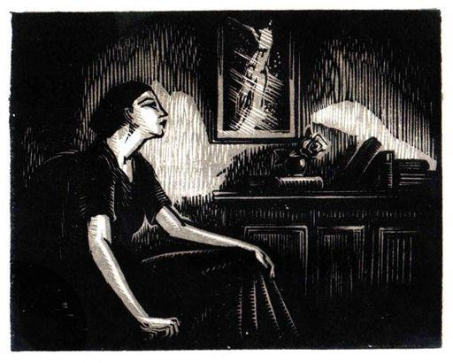

JEANNE GALZY
L’INITIATRICE AUX MAINS VIDES
Bois originaux en couleurs de JEAN GAY
Prix Antoine Claraz
LE LIVRE MODERNE ILLUSTRÉ
J. FERENCZI ET FILS. ÉDITEURS
9, rue Antoine-Chantin, Paris (14e)
MCMXXXIV
À LA MÉMOIRE DE
MADEMOISELLE GERMAINE NORMAND,
MAÎTRESSE PRIMAIRE AU LYCÉE
DE MONTPELLIER
J’OFFRE CE LIVRE AVEC MON CŒUR D’ENFANT.
Il n’y a pas de clefs pour les personnages
de ce livre ou bien il y en a huit ou dix
pour un seul.
Marcel PROUST.
(Lettres à Jacques de Lacretelle).
Elle releva la mèche de ses cheveux pâles qui était sortie de ses bandeaux ; – cette même mèche qui, lorsqu’elle était enfant, barrait son visage étroit et atone, – et le crayon courut de nouveau sur les pages qu’elle annotait. Il
y eut de nouveau ces signes tracés, presque incompréhensibles pour d’autres que des initiés, qui approuvaient, rectifiaient, s’indignaient en marge des écritures maladroites, sur ces feuilles réglées de
gris brutalement barrées à gauche d’une verticale rouge qui endiguait les jambages épatés et timides et les séparait des signes rapides que le crayon inscrivait de l’autre côté.
Et les abréviations couraient aussi vite que la pensée de cette femme qui scrutait les écritures d’enfant : une femme qui n’était plus jeune, une silhouette fragile assise devant une table, l’épaule droite un peu remontée, la tête inclinée en avant, avec cette attention du pêcheur penché sur des eaux profondes.
Et elle était, en effet, penchée sur des eaux profondes… Car, au-dessous des écritures maladroites, elle devenait faiblement, comme vues à travers des voiles, d’indistinctes sensibilités, des consciences encore assoupies, d’obscurs et insaisissables rêves : tout un monde intérieur qui à peine affleurait. Les pages de papier écolier où, en professeur vigilant, elle inscrivait ses remarques étaient comme des vitres embuées fermées sur des horizons. Parfois elle relevait une phrase, la creusait, insistait, comme si tout à coup elle allait s’ouvrir et lui livrer son sens caché, lui révéler tout entière une de ces âmes qu’elle s’irritait de si mal connaître. Mais les phrases restaient closes. Elles étaient déjà glacées de convenu, faites de mots appris au cours des lectures scolaires, et étrangement se mêlaient aux bégaiements enfantins tous les plus ressassés des lieux communs.
Déjà l’enfant se dissimulait – sans même le savoir encore – sous un vêtement social. Déjà ces petites filles aux prunelles neuves disaient de vieux mots prudents et vides de soi-même : ces mots dont se servent les hommes.
Marie Pascal se redressa. Le stylomine brilla dans sa main. Les derniers mots de sa pensée intérieure avaient comme un coup d’éclair illuminé du passé dans sa mémoire. Une image se précisa. Un visage pâle aux mâchoires saillantes, avec ce méplat brillant des joues sous le cerne violacé de l’œil. Et les yeux du fantôme de son passé la regardèrent sous une visière de soldat : des yeux gris clair comme une eau d’étang, durement frangés de cils noirs. Les mots dont se servent les hommes…
Elle chassa d’un coup de son épaule relevée le fantôme viril, maigre et grand dans sa capote bleu horizon. Le crayon de métal se releva dans la lumière. Sur les feuillets repris, il se remit à écrire de l’autre côté de la raie rouge, en marge des grandes écritures appliquées.
De nouveau Marie se pencha sur ces rectangles de papier blanc comme sur des vitres opaques…
… Chaque année, à la rentrée d’octobre, elle souffrait de son dépaysement au milieu de petites élèves inconnues. Juillet, qui la séparait de celles que pendant neuf mois elle avait portées près de son cœur, lui était toujours une tristesse. Dans son métier de professeur elle portait, plus frémissante chaque année, une tendresse interrogative, et elle pressait immatériellement toute sa classe dans ses bras refermés. Pendant les mois de congé, où elle se terrait, rendue au repos, dans le village de ses grands-parents, elle se sentait désaffectée et comme étrangère. L’occupation de ses cours à préparer, des copies à corriger manquait cruellement à sa vie, et les livres qu’elle lisait, dans sa pauvre chambre d’enfant où elle avait tant travaillé jadis pour échapper à l’étroitesse du village, lui donnaient toujours envie d’écrire en marge ses applaudissements ou sa réprobation.
Septembre passait. Les feuilles des hêtres commençaient à rougir dans l’allée de l’enclos, et les marronniers de l’avenue de la gare formaient une tranchée rousse et desséchée. Ses vieux disaient : « Déjà c’est fini ! Tu vas partir ». Et Marie voyait la classe où elle enseignait, avec ses murs peints de gris, ses pupitres de chêne, les petites filles toutes neuves dans leurs tabliers clairs.
La vieille s’arrêtait un moment, cessant d’éplucher les betteraves qui violaçaient ses mains ridées. Sous son bonnet noir son regard aigu dévisageait Marie sans indulgence.
— Tu es mieux portante, pour sûr. Tu as renforci. Et puis tu parles si peu que tu auras reposé ta voix !
Le vieux tirait une longue bouffée de sa pipe, la rejetait avec, lenteur et tendrement il ajoutait :
— Mais oui… mais oui !
Les betteraves de nouveau jutaient dans les vieilles mains actives.
Marie revoyait toujours les murs gris, les pupitres alignés. Elle faisait effort pour ne plus y voir les enfants de l’année écoulée : celles qu’elle n’aurait jamais plus. Elle s’arrachait mentalement à leur image. Elle leur disait adieu une fois de plus, et mieux que lorsqu’elle les avait embrassées, une à une et presque toutes, dans leur belle robe de fête, le jour de la distribution des prix – ces robes de fête qui les rendaient soudain distantes – alors que les petites glacées de timidité l’attendaient à la sortie, avec à côté d’elles, cette inconnue un peu curieuse et si superficiellement reconnaissante qu’était la mère.
Et la mère disait, presque invariablement : « Mademoiselle Pascal, si vous saviez comme Mimi me parle de vous ! »
Mimi… Lulu… Nénette : noms enfantins que disent les mères, que Marie n’avait jamais entendus et qu’en classe on ne prononce pas.
Marie sentait que les petites filles qui la quittaient reprenaient avec leur nom véritable leur vrai emploi, qu’elle n’avait eu devant elle que de petits êtres avides ou ennuyés, venus là pour becqueter un peu de savoir, mais qui n’avaient jamais en sa présence vécu de leur vie véritable. Et les grands regards interrogatifs levés sur elle, où elle avait cru lire un attachement, n’étaient-ils donc que des regards qui pompaient la science utile, apprenaient avec hâte, pour aller s’émouvoir ailleurs ?
Celles-là dont les mères avaient dit : « Comme ma petite ne fait que me parler de vous, mademoiselle Pascal ! » allaient être essaimées dans tous les pays d’été : montagne, plages, villages perdus, et à chacun de leurs sauts dans l’herbe ou de leurs ébats dans la mer, à chaque baiser à leur mère, le professeur s’effacerait. Même pour les plus attentives, la rentrée des classes serait moins faite de souvenirs de l’an écoulé que d’espoir. Elles ne diraient pas, les petites qui verraient s’approcher la rentrée : « Reverrons-nous Mademoiselle Pascal ? » mais : « Qui aurons-nous comme professeur ? » Et une nouvelle obéissance serait déjà dans leurs âmes plastiques, avec cet obscur désir, malgré tant d’écarts, de recevoir une discipline, de se soumettre à une règle, et déjà – si fémininement – d’appartenir !
… Onze heures se mirent à sonner. Marie Pascal cessa de corriger, réunit les copies en tas, se leva comme si elle obéissait à un signal monastique. Elle ouvrit la fenêtre et, pour fermer les persiennes, passa sur le balcon.
Dans cette Picardie pluvieuse la fin d’octobre marquait une rémission. Il faisait doux. En bas, le square désert hérissait, sous un éclairage douteux, ses têtes d’arbres dépouillés. À droite la rue pavée résonna au passage d’un camion. Les maisons provinciales dormaient déjà et, au-dessus d’elles, le grand ciel libre se creusait en profondeurs laiteuses où la voie lactée épaississait son fleuve clair.
Marie respira. L’odeur des feuilles tombées se mêlait aux relents de cuisine d’un hôtel voisin, mais elle discerna surtout cette senteur de terre humide, de feuillage pourrissant, de campagne mouillée. Un instant elle se sentit comme soulevée hors du temps, arrivée à un de ces brusques éclairs où l’on comprend qu’on n’a pas fait encore son choix et que la vie reste à vivre. Elle eut peur de cette impression, secoua sa rêverie.
— Il faut se lever tôt demain, articula sa pensée intérieure avec cette habitude de formuler qu’ont ceux qui se servent sans cesse dos mots. « Comme mon appartement est froid ce soir ! » formula sa pensée. Car le froid qu’elle n’avait pas trouvé dehors était là, sous l’électricité, dans celle étroite pièce qui servait à la fois de salon, de bureau et de salle à manger, et la suivit le long du petit corridor, et la fit frissonner dans cette chambre vide au grand lit de cuivre où à présent elle se dévêtait.
Deux divisions de Cinquième, qui à tour de rôle occupaient la même classe, et auxquelles elle enseignait tout : lettres, géographie, histoire, constituaient son domaine. Lorsqu’elle était arrivée au Lycée d’Amiens, il y avait huit ans, c’était des petites classes qu’on lui avait confiées comme à la dernière venue. Les autres agrégées se partageaient à l’aide d’un roulement les plus grandes élèves.
Cantonnée dans le royaume de l’enfance, elle s’y était intéressée, puis attachée… En somme, elle était sans prestige. « Eût-elle réussi ailleurs ? » lui avait dit une fois Mlle Hatsfeld qui avait été son professeur jadis et qui gardait avec elle sa liberté d’appréciation.
Elle ne savait pas si elle réussissait. Elle savait seulement que ces petites, confiées à ses soins, prenaient chaque année plus de sa vie.
Ce n’était plus comme autrefois seulement les matières du programme qui occupaient sa pensée ; ce qu’elle avait à enseigner n’était plus pour elle que prétexte à une quête plus intime : la recherche de ces âmes, le désir de les connaître, de les guider et dans quelques cas, lui semblait-il, de les secourir. Car, malgré tous les démentis de l’expérience, ces rapides oublis d’élèves passées dans les autres classes et qui n’avaient plus pour elle qu’un salut chaque année plus distant, il y avait des minutes où les regards levés vers elle étaient si pathétiques qu’il fallait bien croire qu’ils appelaient… Son illusion n’était que d’avoir cru parfois l’appel définitif alors qu’il n’était qu’une requête passagère. Mais qu’importait ! Elle se contentait d’avoir aidé à franchir ce passage difficile – dont elle gardait encore le souvenir – de l’innocence enfantine à l’inquiétude de la formation, cette préadolescente tourmentée, si proche du déséquilibre, si troublée de ce qu’elle peut apprendre de la vie, et qui pourtant doit l’apprendre, tend à l’apprendre : la première flétrissure de l’ange…
Marie Pascal s’émouvait en songeant à tous ces anges menacés…
Elle entra, comme tous les matins, de ce pas si peu perceptible qu’elle surprenait toujours les conversations commencées en l’attente du professeur, et que les petites, qui n’avaient pas encore gagné leur place, formaient ces groupes qui lui livraient le secret de leurs sympathies.
Il lui déplut que la grande Solange Hubac causât avec deux autres plus ignorantes, elle la renvoya au quatrième banc où elle avait coutume de parquer les élèves les plus averties, pour maintenir une distance entre elles et celles en qui s’attardait l’enfance, s’assit et commença à enseigner.
Les tabliers de toile écrue, à peine différents de forme, faisaient une sorte de quadruple barrière où battaient des cœurs, et chaque mot qu’elle prononçait atteignait ces cibles vivantes. Encore une fois, elle sentit sa responsabilité, eut l’épouvante des réponses que tant de ses paroles pouvaient fournir à des questions qu’elle ne connaissait pas. Elle se dit : « Comment deviner ? » et tâcha comme chaque jour de se rendre attentive à chaque regard, à chaque indiscernable plissement de paupière qui indiquait l’incompréhension, à chaque tiraillement de jeune bouche un peu ouverte qui marquait la surprise, à cet obscur affaissement de la face qui révèle l’inattention et, soudain, à la transfiguration lumineuse de celles qu’une compréhension subite inonde.
Quarante figures levées. Quarante âmes en éveil !
Marie, parfois, baissait la tête. Elle cherchait le noir espace rectangulaire de sa table comme on cherche de l’ombre après avoir longtemps regardé un paysage mouvant. L’heure qui finissait l’étonnait toujours. Elle n’avait pas encore assez donné d’elle à ces quarante vies attachées pour une heure à la sienne, baignées en elle, nourries d’elle, comme ces plantes qui puisent leur sève dans la même terre ténébreuse.
Elle sortait de son don un peu lasse, entendait les pieds impatients piétiner déjà le plancher, les quarante hâtes de mouvement déchaînées, et, dans le brouhaha de la sortie, les quarante tabliers écrus passaient devant elle.
Elle reprenait haleine, regardait le ciel apparu dans les larges baies ouvertes à la fuite lourde des nuages. Puis d’autres pas pressés se rapprochaient et un nouvel auditoire gravissait de nouveau les marches du petit amphithéâtre.
Trois fois, quatre fois, le flux et le reflux s’accomplissaient. Trois ou quatre fois Marie voyait changer les visages tendus vers elle. La journée scolaire touchait à son déclin. Encore une heure et ce serait achevé…
Elle sortait, rendue à elle-même, à la ville, à sa propre vie. Elle s’étonnait de se sentir toujours triste de cette liberté comme si elle n’existait pleinement qu’à ces heures où tant d’autres vies l’aspiraient.
Dans la nuit déjà tombée, elle longeait la façade, nouvellement restaurée depuis la guerre, du bâtiment administratif. Des mères s’éloignaient, tenant contre elles la petite fille qui sautillait ou qui gravement portait le lourd attirail scolaire. Quelques-unes marchaient – ombre étroite collée à l’ombre de la mère – comme deux êtres soudés, dont l’un était l’exact reflet de l’autre. Des groupes enfantins s’égaillaient avec de joyeux propos, dont elle n’entendait, de loin, que les jeunes voix acides.
Là-bas, il y avait des maisons où entreraient leurs turbulences, des lampes éclaireraient des tables familiales où elles écriraient leurs devoirs, et la mère, occupée au repas du soir, ferait plus silencieux ses gestes et ne parlerait pas pour ne pas troubler leur travail. Et toute la ville était ainsi peuplée de maisons qui, à la nuit, se refermaient sur une enfant.
Marie traversa le square désert. Les boutiques illuminées, du côté de la rue qui longeait le jardin, jetaient de longs pans de clarté sur la chaussée grasse de boue. Elle traversait la voie, rentrait chez le crémier où elle achetait pour son repas du soir des légumes déjà cuits, qui gardaient toujours le goût de leur caissette de carton. L’unique lampe électrique éclairait mal l’escalier en échelle de l’étroit immeuble où elle habitait. Le tailleur d’en bas, qui avait son logement au-dessus de sa boutique, faisait aussi peu de bruit que s’il eût été absent, et au-dessus d’elle, le troisième étage, occupé par deux petits rentiers, ne semblait habité qu’aux heures régulières où les pas pesants de l’homme descendaient l’escalier pour la promenade quotidienne et où la femme allait aux provisions.
Le grand silence provincial entourait sa solitude. Elle corrigeait ses devoirs, ou lisait avidement. Elle s’évadait alors dans le monde fictif que lui fabriquaient ses lectures, s’entretenait avec des ombres : celles des écrivains dont les œuvres lui devenaient tout à coup si chères et comme vitales, sans que jamais elle fût tentée de communiquer directement avec un de ceux dont la pensée était la nourriture de son abandon.
Mais à chaque découverte, un instinct la ramenait aux petites confiées à ses soins. Il lui tardait d’être au lendemain. Elle avait hâte de leur faire part de cette vérité neuve, de cette subtile peinture de paysage, d’une phrase qui l’avait enchantée : comme ces poules qui ne grattent le sol, semble-t-il, que pour faire jouir de leurs trouvailles le cotonneux et turbulent troupeau de leur couvée.
Il lui était difficile de retenir chaque année quatre-vingts noms différents et tout le premier mois était consacré à ce soin. Elle les apprenait comme une langue étrangère, les répétait en classe en regardant chaque enfant, prenait des points de repère pour les retrouver, troublée dès qu’un changement de place emmêlait son échiquier vivant.
Les cheveux coupés court sur un presque même modèle, donnaient aux petites filles du même âge une sorte d’air de parenté. C’était par la taille qu’elle les distinguait d’abord, à moins qu’un visage ne la frappât. C’était ainsi qu’en Cinquième A elle avait tout de suite connu Solange Hubac, avec son beau visage précocement féminin, cette clarté du regard, quand il lui arrivait par hasard de s’intéresser à quelque chose, et, le reste du temps, sa nonchalance aux poses instinctivement apprêtées : cette grâce qui s’exerçait sur ses camarades et faisait d’elle, à toutes les récréations, le centre d’un groupe obscurément séduit.
Solange avait des façons cavalières de demander une explication qui était déjà, pensait Marie, la manière impérieuse dont elle parlerait aux hommes. Jamais elle n’avouait un tort ou un oubli. Elle prenait devant les réprimandes cet air absent de princesse offensée qu’elle aurait plus tard devant les soupçons ou les reproches, et son beau front un peu bombé s’inclinait alors avec une sorte d’impénétrable entêtement outragé et satisfait.
La Cinquième B était la classe de Madeleine Legendre avec son air de poussin mal venu, sa tête à tignasse filasse, ses bras trop longs terminés par des mains noueuses, des mains énormes pour son corps atrophié. Une interne, venue de la campagne, victime des ignorances paysannes, ayant surmonté sa crise de rachitisme en gardant sa déformation, mais vive, active, intelligente.
« Trop intelligente, songeait parfois Marie, pour ne pas souffrir », et, à d’autres heures : « Assez intelligente pour surmonter les disgrâces de son corps. » Et elle s’appliquait à lui préparer des motifs de joie, à étouffer, durant les heures où elle l’avait devant elle, son admiration pour la beauté formelle, à insister, plus qu’elle ne l’eût fait ailleurs, sur les jouissances de l’esprit.
Madeleine Legendre écoutait. Rien ne décelait à Marie qu’elle eût pris la part de viatique qu’elle lui offrait. Mais elle espérait qu’à son insu l’affirmation se gravait en elle.
Ainsi, les deux sections de Cinquième s’aggloméraient lentement autour de deux êtres d’exception, si dissemblables que Marie n’abordait jamais les deux classes avec les mêmes pensées et, malgré la similitude des programmes, avait la sensation d’y donner deux enseignements différents.
Puis, autour de Madeleine Legendre et de Solange Hubac, d’autres visages peu à peu émergeaient : Henriette Spire, Lucette Arnal étaient les petites filles modèles dans la classe de Solange, et, en Cinquième B, auprès de la petite infirme, Alice Couturier dessina vite sa tête hirsute de garçon manqué, Madeleine Hovelacque, son fin profil d’enfant fragile, et Sophie Desfossés, si brune, son type de méridionale exilée.
Il y eut un jour où Marie sut tous les noms, remarqua les changements de place, connut les gestes, distingua les voix au point d’adresser justement une réprimande pour des paroles à peine murmurées. Puis elle commença à mesurer les dons intellectuels, à doser la mémoire, l’esprit d’observation, l’ordre dans les pensées, les lacunes dans les connaissances acquises. Mais elle s’interrogeait toujours sur ce que ces petites gardaient d’impénétrable.
Étrange tâche de deviner des enfants ! Ce chaos si mal éclairé en eux, comment pourrait-il devenir perceptible à ceux qui ont l’habitude de la lucidité ? Marie sentait qu’il fallait renoncer à sa propre psychologie pour pénétrer dans ce désordre de monde en formation. Au seuil de ces consciences chaotiques elle s’arrêtait. Comment se pouvait-il que ces petites, qui lisaient avec avidité les plus stupides journaux d’enfants, soient celles qu’elle voyait parfois si intéressées par une littérature d’hommes ? Que reflétaient-elles ? Qu’étaient-elles ?
Elle s’ingéniait à les forcer aux aveux. Les titres des devoirs proposés étaient presque un appel à leurs confidences. Elle s’irritait de celle obligation de pratiquer une sorte d’indiscrétion professionnelle, comme les médecins. Mais n’était-elle pas médecin d’âmes ?
Elle passait outre ses scrupules. Ses premiers sujets de devoirs ne sollicitaient que des impressions générales. Puis, peu à peu, elle s’enhardissait. Il y avait un jour où elle osait poser des questions révélatrices. Cette année elle demanda : « Quelle fut votre plus grande joie d’enfant ? » et, à l’autre section, par contraste : « Quel est le souvenir le plus douloureux de votre vie ? »
Elle releva les devoirs, un peu troublée. Le paquet lui semblait plus lourd. Elle avait hâte d’être chez elle pour scruter ses petites inconnues.
Déjà toute une section avait répondu au premier sujet proposé et Marie avait lu le récit de repas de noces, de jour de naissance d’une petite sœur ou d’un petit frère, d’édifiants témoignages de bonne action, et elle avait vu, dans les jeunes visages que ressuscitait son souvenir, un si profond contraste entre ce choix et leur expression vraie qu’elle n’avait pu douter d’une intrusion étrangère.
— « Raconte le jour de ta première communion ! » avait dû ordonner à Luce Ardouin sa mère dévote qui tressait selon des modes désuètes les cheveux rebelles de l’enfant, tirait sur les boucles, les domptait sous un peigne rond, accablant d’une coiffure monacale le visage rose, riant, creusé de fossettes. Et Luce avait écrit docilement, élevée déjà à trahir.
Elle n’avait rien dit de ce qui avait été peut-être son plus beau jour, dont Marie avait surpris la confidence naïve transmise à une compagne : partie de cache-cache dans les foins où elle avait su habilement se soustraire à toutes les recherches et où elle avait eu la délicieuse angoisse d’entendre crier son frère : « Regarde dans le puits ! Si elle y était tombée ! » – « J’espère devenir une bonne chrétienne », affirmait le devoir menteur. Mais le rose visage à fossettes chantait un tout autre espoir.
Ainsi Marie, à travers les feintes, cherchait la vérité comme un chemin perdu sous les broussailles. Ce fut dans le paquet des Cinquième B qu’elle la trouva. Le sujet douloureux avait-il éveillé un écho plus sincère ? Il y avait des récits de deuil où rien n’était appris. La douleur se discernait plus prématurément que la joie et les enfants n’avaient pas eu besoin de recourir à l’aide reposante des parents.
Elle lisait si vite et si subitement intéressée qu’elle se mit à parcourir les copies, dans sa hâte. Presque toutes rendaient un son vivant. C’était de la chair sur laquelle elle appuyait sa main, des vies qui palpitaient, de la douce et pitoyable matière humaine. Une phrase la surprit : « Ma journée la plus triste revient toutes les semaines. C’est le jour où petite mère reçoit ses amies et où je l’entends rire. »
Elle courut au contexte, lut d’un trait, revint à la phrase révélatrice, monta vers le nom de l’enfant, en haut de la page, écrit d’une belle écriture appliquée : « Annette Rieu », ferma les yeux, évoqua un visage, et soudain s’irrita de ne pas le voir distinctement, perdu parmi les dix ou douze restés obscurs : ceux que, pour porter en elle, elle n’avait pas encore assez regardés.
Elle la chercha du regard à travers le désordre des petites filles levées eu signe de salut, droites et de tailles inégales, et le moutonnement des têtes à niveaux différents.
Dans un déplacement de deux bustes, le visage apparut, à hauteur d’épaule des deux élèves qui le cachaient, et, d’un bloc, Marie vit la face mate et un peu hâlée, les drus cheveux noirs coupés en frange.
Les élèves s’assirent. Marie ne distinguait plus qu’à intervalles, selon les déplacements des plus grandes, les yeux dorés, le petit nez droit et un peu court, ce visage doux dont le charme ne devenait apparent que lorsqu’on y était attentif. Un vrai visage d’enfant, avec une lèvre supérieure un peu soulevée, comme ouverte sur un invisible sein.
Elle s’en voulut de ne pas l’avoir remarqué tout de suite – « Tant de jours, de semaines perdues ! » – se répéta le nom : « Annette ! », et il lui plut qu’elle fût ainsi à peine sortie de l’enfance avec ces épaules étroites, cette toute petite poitrine plate sous la bande brodée du tablier, cet air effacé et studieux.
Elle se remémorait la confidence amère, et, à présent devant le visage puéril, elle se demandait si elle n’avait pas aggravé dans son imagination l’aveu de cette détresse. Était-il possible que cette petite tête ronde ait fléchi sous une aussi lourde peine, qu’un cœur d’enfant gardât une telle fidélité farouche au souvenir du père mort, que le rire de la mère devînt un tel tourment, qu’il y ait dans cette poitrine plate et encore sans sexe ce besoin exalté de ne pas oublier, cette révolte contre la vie reprise, la gaîté revenue : l’éternelle défection des vivants ?
Annette !… Le nom enfantin avait l’air de battre des ailes, d’être léger comme un vol.
Elle regardait le jeune visage entre la tête d’Elvire Dacheux, une nouvelle venue que sa mère romanesque coiffait avec des bandeaux terminés par de longues boucles à l’anglaise, et la sage, blafarde et disgracieuse Amélie Bosc. Mais il suffisait d’un mouvement d’une d’elles pour qu’Annette disparût, trop petite à une table éloignée.
Il fallait la rapprocher d’elle. La petite, studieusement, s’inclinait sur son livre pour suivre le texte. À ces moments-là, même quand les deux grandes lui laissaient l’espace de l’apercevoir, Marie ne voyait que la tête baissée. Elle s’en irrita, comme si déjà lui était venu le besoin de lire sur ce visage le reflet de ses paroles ; mais l’ordre des places est une des choses à quoi tiennent le plus les enfants. Elle n’osait pas enfreindre des habitudes vieilles de plus de deux mois et qui semblaient avoir créé des droits de propriété.
Pendant la dictée elle se leva, et, contrairement à son ordinaire, monta dans la travée centrale de l’amphithéâtre, regarda les mains lentes tracer les signes sur les pages, hésiter aux lettres, douter, choisir parfois avec une sorte d’emportement. Là-bas, à la troisième rangée, la petite main un peu rouge tenait un gros stylographe d’homme. « Celui de son père ? » se demanda Marie. Une seule élève la séparait d’elle, car elle était presque au bout du troisième banc. Marie surplombait le petit corps penché. Tout était net, soigné. Du tablier repassé de neuf, s’exhalait cette odeur qu’elle croyait sentir, mêlée à l’odeur des enfants : eau de Cologne et beurre frais, odeur hésitante de chair trop jeune encore pour avoir sa senteur distinctive.
Elle se pencha, comme pour surveiller les devoirs, montra une faille à Denise Arquet, qui était au bout de la travée, s’inclina encore un peu plus, et la petite tête brune fut presque à portée de son souffle. Elle vit la qualité des cheveux drus et fins, leur noir soyeux glacé d’un léger reflet roussâtre, contempla la main crispée sur le stylo trop lourd, et, au moment où elle allait dire : « Annette ! » comme elle avait dit : « Denise ! », sentit sa gorge étranglée, se redressa, redescendit, s’assit à sa table.
Les plumes grinçaient sur les feuilles. À chaque phrase dictée, comme un écho presque soupiré, montait le balbutiement incoercible des lèvres enfantines qui répètent tout bas la phrase entendue, puis des questions furtives de voisine à voisine pour vérifier son savoir. Marie surveillait tout cela d’ordinaire, et les regards qui guettent sur le cahier d’à côté pour voir comment la camarade écrit un mot difficile. Mais aujourd’hui, elle ne surveillait que la tête brune si sagement penchée sur une page et les sursauts du grand stylo noir, dont elle apercevait parfois l’extrémité mobile, conduit par les doigts appliqués.
Elle reconstituait pour elle l’histoire qu’esquissait le devoir révélateur. Le père mort revêtait l’aspect d’un soldat. Des souvenirs de sa propre vie se mêlaient à ses hypothèses sur la vie d’Annette. Une seconde, le père de l’enfant lui apparut avec cette silhouette maigre, ce dur visage aux yeux gris qu’elle avait aimés.
Aimés ? elle ne savait plus, à travers le temps, captée par son métier d’éducatrice et comme cloîtrée dans sa fonction, devenue nonne à force de solitude, de travail, d’existence austère, échappée pour jamais à sa fonction de femme et n’ayant plus à attendre de la vie que ses promotions, sa retraite et la mort.
« Une vie si unie ! » se disait-elle parfois pour se consoler de la sentir si vide des joies de son âge, et d’autres fois, elle ajoutait en elle-même, lorsque les hasards lui faisaient coudoyer les misérables intrigues charnelles : « si nette, si propre ! », avec une sorte de dignité satisfaite d’être sortie si vite des compromissions où entraîne la chair.
Et il y en avait des milliers répandues sur le monde, de vies d’éducatrices aussi dépouillées, aussi monacales. Bien qu’elle n’eût aucune intimité avec ses collègues, elle se trouvait soutenue par cette certitude de tant d’existences semblables à la sienne. L’ordre universitaire lui paraissait l’encastrer comme une armature. Elle y vivait, soumise à une règle informulée, moniale vouée à l’éducation des enfants.
Ainsi la Marie lointaine, qui avait eu la faiblesse, la compassion, la passivité, lui était devenue une sorte de double, distinct d’elle, bien qu’il la hantât et que, faute d’autre expérience, l’aventure rapide de quelques semaines ait pris dans son souvenir l’importance d’un véritable amour.
Le devoir d’Annette disait : « Papa est mort pour avoir trop souffert à la guerre. »
Dans un éclair elle pensa que c’était de cet âge précis qu’elle eût pu avoir un enfant. Douze ans !
À travers des rêveries indistinctes, affluèrent en elle des sensations précises tandis qu’elle dictait, par petits morceaux courts, pour ne pas excéder le pouvoir de rappel des petites élèves, et qu’elle veillait machinalement à ce que la grande Huguette Dobelle ne copiât point selon sa coutume la petite Yveline Allier.
… Un petit corps rond, chaud et mou dans les bras repliés, contre la poitrine. Ce poids, cette forme, cette odeur de lait. Puis les cheveux doux d’une tête de deux ans, et les pas maladroits et la force de cette petite main qui agrippe, si petite et si forte ! Puis les yeux levés qui interrogent, l’âme qui s’éveille. Les mots maladroits qui s’essaient ; ces pleurs qui tirent en bas les coins tremblants de la bouche ; ces rires qui fusent et roucoulent : tout ce mécanisme divin !
Elle s’était levée sans s’en rendre compte et marchait, en dictant, en proie à ses images intérieures.
… Ce petit cou sortant des broderies blanches, ce grain délicieux de la peau tout cela était dans ses doigts qui tenaient le livre. Puis la petite fille qui éclot et laisse tomber de sa minceur les rondeurs inutiles et molles, le corps net et pur, ces tendres inflexions où la femme se devine, ce reflet d’elle marchant à côté d’elle – comme elle l’a vu tant de fois à côté d’autres mères. Douze ans ! L’âge qu’aurait pu avoir sa maternité.
Le livre était toujours entre ses mains. Toujours elle dictait par petites phrases courtes. Mais elle ne voyait pas le livre où pourtant elle lisait exactement, soutenue par l’automatisme professionnel.
Une règle tombée la fit tressaillir. Alors les images se brisèrent. Elle reconnut qu’elle était remontée le long de la travée, près du troisième banc où Annette écrivait.
Et le regard de l’enfant était fixé sur elle, un regard timide et interrogateur : ces regards effrayants de profondeur qui quêtent, cherchent, implorent presque.
Marie, interdite, baissa les yeux.
Pendant des jours elle n’osa plus interroger l’enfant.
Elle fuyait la force de ce sentiment éclos soudain en elle, rapide comme celui d’une femme qui sent le premier frémissement de sa future maternité.
Et il lui semblait que ses gestes mêmes à son insu se préparaient à bercer, à porter sur les genoux, à étreindre.
Elle essayait d’oublier et, dans l’espace vide de son appartement désert, elle emportait avec elle une forme toujours plus distincte et envahissante qui était Annette, avec sa petite taille, sa tête brune, le son de sa voix chantante et un peu aiguë qui soudain s’estompait de notes plus graves, une voix indécise encore qui avait ces mouvements hésitants d’ailes qui s’essaient au vol.
Elle eût voulu connaître celle qui possédait Annette : la mère oublieuse et riante, et pourtant, pour éviter de la rencontrer, s’attardait toujours après la classe dans le vestiaire des professeurs, cette longue pièce percée de deux fenêtres, assombrie par l’avancée d’un mur qui dominait la cour en contrebas.
Ses collègues se hâtaient de partir. Elle recevait l’« au revoir » distrait de Mlle Audié qui vivait seule avec sa bonne, muée en une sorte d’automate enseignant tant elle avait peu d’apparence humaine, Mlle Hatsfeld lui criait de sa voix autoritaire et cordiale : « Au revoir, Marie ! » et Mlle Weil-Lévy s’effaçait dans un murmure d’adieu et un signe de tête baissée sous un chapeau qui confisquait tout le haut de son visage blafard, tavelé de taches de son, où régnaient deux yeux pâles et étrangement lumineux.
Marie posait ses livres sur l’étagère de l’étroite portion d’armoire qui lui était allouée comme à chaque professeur ; elle y prenait ses copies à corriger, en sortait son manteau, son chapeau, se vêtait lentement. Pour perdre encore du temps, elle lisait toujours à ce moment-là les communications administratives ou corporatives, signait au bas des convocations ou des avertissements.
Elle espérait que l’inconnue aurait emmené Annette, qu’elle ne verrait pas l’enfant partir avec une autre dont la pensée l’émouvait d’un trouble bizarre : souffrance, jalousie, rancune et, par moments rapides, attrait.
Elle se la figurait fragile, facile à dominer, encore trop jeune pour être la vraie mère d’Annette. « Petite mère », ce nom sans doute choisi par elle indiquait son désir d’être pour l’enfant une sorte de camarade, implorait plus la protection qu’il ne commandait le respect. Des détails de coquetterie dans les robes d’Annette la lui faisaient imaginer élégante. Elle devait être un peu futile, sans profondeur. Une femme-enfant, comme ces charmantes créatures démodées de Dickens en qui rien ne peut gravement retentir. Elle aurait voulu demander à Annette si sa mère lui ressemblait. Mais elle s’affirmait que non. Annette devait perpétuer son père. Cela expliquait le culte de l’enfant : elle était la fille d’un mort et regardait avec sévérité – elle si petite et si grave – rire et babiller la vivante.
D’autre fois elle se disait avec un coup au cœur : « Et si pourtant Annette lui ressemblait ! » et elle la voyait sous les traits de l’enfant comme serait une Annette grandie. Alors elle souffrait de l’existence de ce double trop proche d’Annette et s’efforçait à penser de nouveau à la créature-enfant de Dickens, la petite mère qui riait et papotait avec ses amies.
Elle faisait sa classe à présent avec une sorte de trouble. Elle retrouvait toutes les timidités de ses débuts d’enseignement et préparait ses cours avec une ardeur inquiète. Elle voulait gagner l’admiration d’Annette.
En face d’elle, les quarante petites filles alignées n’étaient plus qu’une masse confuse. Elle oubliait même la petite infirme Madeleine Legendre qu’elle avait rapprochée d’elle au début de l’année pour l’avoir mieux sous sa protection. Par habitude, son regard tombait d’abord sur le visage souffreteux, construit en angles comme le corps aux vertèbres brisées ; mais il le dépassait tout de suite, scrutait la double barrière d’enfants qui cachaient Annette, en sondait les interstices, se frayait parfois passage entre deux épaules écartées, touchait, là-bas, une tête brune aux cheveux drus et doux, ou tout à coup baisait à la dérobée toute la face aux traits enfantins aussi peu marqués que ceux des poupées japonaises.
À la sortie, parmi toutes les têtes penchées en signe de salut, elle ne regardait que celle-là. L’inclination en déplaçait deux lourdes mèches en virgule qui soudain envahissaient la joue. Et le léger mouvement qu’avait Annette pour les rejeter à leur place lui donnait un sourire d’attendrissement et presque des larmes. Le geste était si doux, si puéril, comme celui des têtes de chevreaux qui se secouent. Il disait l’enfance. Il semblait symboliser l’innocence d’Annette. Et Marie découvrait en elle une sorte de respect tremblant devant cette ingénuité.
Un hasard lui apprit que la rencontre qu’elle redoutait n’aurait peut-être jamais lieu : la mère ne venait pas chercher sa fille. Annette possédait la carte que toute élève qui sort seule doit montrer au concierge avant de partir du Lycée. Elle avait glissé d’un des livres, posés sur la table de Marie comme il arrivait chaque fois qu’elle avait besoin d’un exemplaire des textes expliqués en classe. Elle avait ouvert le livre sans supposer qu’Annette placée au troisième banc eût pu lui prêter le sien, et la carte rose s’en était échappée dans son enveloppe transparente. Elle ne vit pas d’abord le nom, mais la photographie d’identité qui représentait une Annette un peu plus petite, plus potelée, aux joues plus rondes. Une coiffure plus enfantine accusait encore la différence. Les cheveux séparés par une raie sur le côté étaient taillés très court. Le front dégagé donnait aux traits plus d’indécision et d’enfance.
D’après cette image. Marie pouvait se figurer une Annette bébé. Elle souriait intérieurement à ce rond visage et le confrontait, chaque fois qu’Elvire Dacheux et Amélie Bosc la lui laissaient apercevoir, avec la figure amincie, comme amenuisée par la pensée, où le délicat muscle de la joue s’incurvait légèrement sur les mâchoires, où les narines se reliaient aux commissures des lèvres par une subtile déclivité, où le menton se creusait un peu sous la bouche avant de saillir en lignes pures et aiguës.
Elle interrogeait ses élèves cependant que ses doigts caressaient sous l’enveloppe cristalline l’image passée. Elle se surveillait pour qu’Annette même ne pût se rendre compte qu’elle avait reconnu cette image et appris par elle une sorte de secret dont à présent elle épuisait le sens : Annette n’était point protégée par une vigilance de toute heure, la mère futile s’abstenait de couper ses journées d’allées et venues régulières, ne soumettait point sa vie au rythme des heures de classe, n’avait point cette anxiété d’amour qui rend angoissées les plus tendres et leur fait imaginer tant de risques pour leur enfant qu’elles viennent à chaque sortie, qu’elles accompagnent chaque rentrée, quatre fois hors de leur demeure, interrompant quatre fois tout travail ou tout plaisir, dans la hantise de l’auto qui peut écraser, du pas qui peut glisser, des mauvaises rencontres possibles. Elle lut l’adresse, la retint pour jamais.
C’était loin. De là peut-être l’apparente négligence de la mère. Mais elle avait trop d’intérêt vital à croire à une demi-indifférence pour renoncer à interpréter ainsi la liberté où la mère laissait l’enfant. Il lui plut qu’Annette fût moins choyée et par là plus laissée à elle. À son insu, une sorte d’espoir de suppléance possible envahissait son cœur, et le devoir qui contenait un aveu de détresse s’imposait à sa pensée : elle eût voulu l’avoir encore, le relire, en presser le sens. Peut-être n’avait-elle pas tout bien vu ?
Puis tout d’un coup, elle sentit qu’elle ne pouvait plus laisser Annette si loin d’elle. Elvire Dacheux rapprochée d’Amélie Bosc suivait dans le même livre. Annette n’était plus visible et Marie épiait les deux grandes qui la lui cachaient.
Elle s’était dit : « Elles parleront ensemble. Je saisirai ce prétexte pour les faire changer de place ! » ; mais les grandes ne parlaient pas. La longue Amélie Bosc suivait du doigt les lignes à mesure qu’elle lisait, et Elvire Dacheux, entre ses anglaises qui tombaient presque sur la page, rêvassait en silence, écoutait peut-être.
Le temps passait. Déjà la cloche avait sonné qui annonçait la récréation des classes enfantines, et des pépiements aigus montèrent de la cour en contrebas.
Marie élevait la voix pour dominer cette rumeur gazouillante qui heurtait les carreaux embués de froid. Les petites, fatiguées de leur application, gênées par le bruit, devenaient moins attentives. Des mouvements de jambes indiquaient leur impatience. Quelques-unes commençaient à causer. C’était toujours l’instant des mauvaises notes, celui que redoutait Marie.
Alice Coutenier avait déjà envoyé son plumier par terre, dans un de ses brusques gestes maladroits de garçon manqué. Mais Elvire Dacheux et Amélie Bosc restaient calmes, irrépréhensibles ; seulement Marie voyait Amélie enrouler autour de son doigt l’extrémité d’une longue boucle d’Elvire. Une fois, deux fois, Amélie refit le geste. Peut-être serait-elle revenue à sa coutumière immobilité. Marie commit sa première injustice :
— Amélie, vous avez assez joué. Désormais vous changerez de place avec Annette Rieu !
L’ordre donné, elle baissa la tête sur son livre, continua l’explication, abritée par son travail, défendue contre toute manifestation de sa joie.
Mais, à côté des vers qu’elle commentait, elle voyait ne pouvant encore contempler l’enfant vivante, – la photographie d’identité sous son enveloppe de gélatine, et elle échangeait ses regards avec ceux de cette image, prenait possession de cette Annette évanouie, derrière laquelle elle distinguait les formes de plus en plus petites de plus en plus touchantes, de toutes les Annette du passé.
Les petites étaient déjà assises, et Marie vit que malgré son ordre de la veille, la grande Amélie Bosc était demeurée auprès d’Elvire Dacheux. Elle protesta : « Qu’avais-je ordonné ? » et ce ton surprit les enfants habituées à sa douceur.
La longue Amélie referma avec lenteur ses cahiers déjà ouverts, groupa ses livres, sortit du rang avec une mauvaise humeur manifeste. Annette attendait, toute prête, ne s’étant pas encore installée, et quand elle fut assise au second banc, tout son petit visage devint lumineux, comme refermé sur une grande joie.
Marie évitait de trop la regarder, mais elle sentait plus proche sa présence. Elle fit ses cours, étonnée de son bonheur. Si peu de chose semblait avoir changé sa vie, et ce peu de chose était pourtant une sorte de révolution en elle : pour la première fois, elle osait corriger le destin.
Le jour passa. La sortie de quatre heures sonnait. Pour la première fois aussi, elle s’habilla hâtivement. Dehors, la nuit précoce de décembre possédait déjà la rue et les petites filles étaient des ombres dans le brouillard froid.
Mais une de ces ombres marchait, un peu déjetée de côté par le poids du cartable. Emmitouflée, elle avait l’air toute ronde, mal assurée sur ses jambes fines. Marie songeait qu’en la serrant contre elle, elle sentirait cette douce épaisseur de vêtements, la tendre odeur des lainages chauds.
À l’angle du square, la petite attendit le passage du tramway qui l’emmènerait à son quartier lointain, Marie ralentit le pas. D’autres enfants s’agglomérèrent autour d’Annette, sous le réverbère. Il y en avait de grandes, et la séduisante Solange était là, avec son cortège d’admiratrices.
Un sentiment bizarre serra le cœur de Marie. Elle hâta le pas. Mais le tramway qui arrivait cachait le groupe enfantin. Il s’éloigna avec son bruit de clapets de fer. Alors Marie surprise vit Annette, restée sur le trottoir, un peu inclinée à gauche par le poids du cartable, toute ronde sur ses jambes minces, et la petite figure lui souriait de loin en la saluant. La pensée que l’enfant était restée là pour la voir lui parut certaine. Elle infléchit sa route, et, au lieu de traverser comme d’ordinaire le square désert, longea la grille, s’approcha d’Annette.
L’enfant, à la même place, attendait le prochain tramway. Quelques élèves retardataires formaient un nouveau groupe. Elles parlaient haut avec des éclats de rire, se turent en apercevant Marie.
Marie était arrivée tout près d’Annette. Le jeune visage levé vers elle rayonnait dans la lumière du réverbère.
— Bonsoir, Mademoiselle ! dit la chère petite voix.
Marie hésita. Elle dit après un instant :
— Bonsoir, Annette !
Le prénom chanta sur ses lèvres, puis trembla en son cœur, se fondit en elle délicieusement.
Elle n’osa pas se retourner.
Alors, elle ne commença plus un de ses cours sans faire de loin et immobile, sur ce petit corps d’enfant robuste, le geste de l’embrassement maternel. Elle serrait l’enfant immatériellement sur sa poitrine. Elle caressait la petite tête aux cheveux drus, nettement frangés sur le front, et elle commençait sa leçon sous le regard des yeux humides et dorés.
Dans tout ce qu’elle disait, il lui semblait que sa voix prenait une douceur heureuse. Elle, si repliée, s’épanouissait en imaginations imprévues. Elle s’attendrissait, et les textes vieux de trois siècles, si loin des petites têtes enfantines, s’animaient soudain.
Les petites cessaient d’y voir ces mots devant lesquels elles étaient, la veille, quand elles préparaient leur leçon, étonnées, déroutées, et bientôt ennuyées, les sentant inaccessibles, étrangers à leur âme et comme morts. Hier, elles avaient lu, – leurs mains tachées d’encre suivant les lignes, comme agrippées à cette langue inconnue dont elles ne percevaient qu’à peine le sens –, la prière d’Iphigénie. Et voici que la voix du professeur en tirait des larmes.
Alice Coutenier cessait de mâchonner son porte-plume. Amélie Bosc levait au ciel ses pâles yeux et son profil de brebis, et Madeleine Legendre inclinait son menton pointu entre ses longues mains. Il y en avait qui se serraient instinctivement près de leur voisine comme pour se parer d’un péril. Et Marie cherchait, en regardant sa classe au-dessus du livre, ce regard doré et sombre en qui semblaient tomber tous les mots qu’elle disait, comme si sa parole caressait les longs cils bruns. Elle y percevait les plus légères nuances de l’émotion et la grande lumière de la compréhension passionnée. Annette ne respirait qu’attachée à sa voix, et elle-même ne respirait plus que de l’attention d’Annette.
Un pouvoir, aussi mystérieux que celui qui fait avant la naissance circuler le sang dans l’enfant que porte la mère, était dans sa voix qui la liait à l’enfant. Leur groupe – sans contact matériel, avec l’espace de la chaire et d’un rang de pupitres, – restaurait l’indissoluble mélange de la femme et de la vie qu’elle nourrit. Elle, de sa pensée, animait l’enfant. De son émotion, elle faisait battre ce cœur dans l’étroite poitrine. Un bien-être et une fierté la redressaient :
— Tu seras mon enfant ! Tu seras mon enfant !
Le fallacieux espoir se gonflait en elle d’une réussite inconnue aux autres femmes, d’un destin – dans son dénuement apparent – mieux accompli que les autres destins. Les fatalités des maternités ordinaires ne l’emprisonneraient pas. Elle n’aurait pas, elle, à chérir un être que de confus mélanges d’atavismes peuvent rendre à jamais incompréhensible, étranger, peut-être ennemi. Elle l’aurait élu. Elle l’aurait pénétré de son esprit au point qu’aucune barrière ne serait possible.
Il lui semblait – alors que tous les sentiments de l’humanité ont évolué vers le choix et se sont de plus en plus soustraits aux hasards – qu’une logique évolution devait superposer à l’obscure maternité charnelle cette autre maternité rayonnante. Et Annette, de son côté, le jour où elle avait écrit dans son devoir sa confidence désespérée, n’avait-elle pas, elle aussi, choisi, et plus que choisi, appelé ? Pour l’enfant n’y avait-il pas aussi, au-dessus des fatalités de la chair, le pouvoir d’élection du cœur ?
Des rêves de son enfance lui revenaient. Élevée entre ses deux vieux : la grand’mère coriace et le grand-père inculte et tendre, elle avait construit bien des fois en elle-même la mère qu’elle regrettait. Et cette image était peut-être la négation de la réalité. Qu’était sa vraie mère ? Correspondait-elle à ce fantôme charmant né de ses désirs ? N’avait-elle pas créé de toutes pièces cette ombre contre laquelle il lui avait si souvent semblé appuyer son front ?
Annette, avant de la rencontrer, n’avait-elle pas aussi construit ce rêve d’une mère telle que son cœur l’exigeait ?
Elle eût voulu tout comprendre, tout deviner. Elle regardait un peu anxieuse les grands yeux brillants qui durant l’heure de classe ne cessaient presque jamais de se lever sur elle, et elle y cherchait passionnément, elle aussi, une direction. Que fallait-il qu’elle devienne pour ne pas décevoir Annette ? Quelles exigences habitaient déjà ce cœur ?
Et son besoin de posséder se doublait du besoin de s’asservir.
Alors toute sa vie s’illumina d’attente. Chaque soir, il lui tarda d’être au lendemain et les heures de son existence solitaire – celles où autrefois, penchée sur ses copies ou sur les humbles travaux ménagers, elle écoutait le silence morne du square, les bruits confus de la rue, la solitude de son cœur – ne furent plus que des impatiences éblouies.
Un sang plus riche lui semblait circuler en elle, avec un besoin d’agir qu’elle trompait en cherchant des tâches supplémentaires pour mieux s’occuper de l’enfant. Les cours qu’elle faisait à la section A lui devinrent des sortes de préparations pour ceux de la section B où était Annette. Elle y essayait l’effet de tout ce qu’elle imaginait pour rendre plus facile l’absorption des règles de grammaire, pour éviter à Annette une lassitude ou un effort, heureuse quand la belle et indolente Solange se réjouissait d’une simplification ou s’intéressait soudain à une lecture : Solange, la plus difficile à gagner puisqu’il fallait l’arracher à elle-même, au soin de ses ongles brillants, de son visage déjà maquillé, à cette joie constante où elle était d’être elle, de jouir d’elle à chaque geste, à chaque regard dans le miroir qui si souvent sous la table, à la hauteur des genoux tendu furtivement, brillait.
Son zèle devint tel qu’elle inventa d’emporter une fois par semaine, le samedi, les cahiers où les petites écrivaient les dictées et les exercices qu’elles corrigeaient en classe. On la vit, ployée sous leur poids, cheminer le long de la rue. Elle grimpait l’escalier étroit de sa maison, posait, accablée, son fardeau sur la table. Et tout cet effort n’avait qu’un but : tenir un jour entre ses mains le cahier d’Annette, reposer ses doigts où s’étaient posés les petits doigts d’une propreté un peu douteuse comme sont les doigts d’enfants, même parmi les plus soignés – ces doigts qui laissent des traces légères sur les pages blanches. Et une de ces traces lui fut tout un dimanche un délice, car la petite main moite avait imprimé le bout de deux doigts apparus en mat sur le papier brillant, et Marie y avait cherché le dessin subtil des lignes de la peau, et rêvé longtemps que cette petite main dont elle touchait l’empreinte touchait sa main.
Ombre de contact qui servit tout un après-midi de décembre de pâture à son cœur, et où, au-dessus de cette mélancolie des dimanches provinciaux – promenades en habit de fête, désœuvrement, pauvre gaîté forcée – rayonna sa félicité.
Ce fut au lendemain d’un de ces dimanches qu’un Inspecteur général la surprit. D’ordinaire ces intrusions la rendaient balbutiante. Mais cette fois-là ses méditations de la veille la servirent. Elle oublia sa timidité. Elle parla comme si elle poursuivait le discours intérieur que durant des heures elle avait adressé à l’absente, et il y eut dans ses paroles un tel appel à la compréhension que l’Inspecteur le remarqua.
À la fin des classes, selon la coutume, il reçut Marie ainsi que ses collègues inspectées. L’une après l’autre les femmes entraient dans le cabinet directorial où elles exprimaient leurs vœux et parfois demandaient conseil. Marie ne désirait rien. L’Inspecteur avait prononcé le nom de Paris, offert de l’y nommer.
— Non ! non ! protesta-t-elle avec fougue.
Elle était bien à Amiens, elle y avait été élève, pensionnaire dans une petite maison privée agréée par le lycée. Toute sa vie s’était écoulée là, à part ses années de Sèvres, les deux ans de son premier poste dans le midi. Elle ne voulait pas changer.
— Ici, j’aime les enfants. Je les comprends mieux. Je sais qui elles sont, ce qu’il faut pour elles. Elle s’esquivait. L’Inspecteur la rappela sur le seuil :
— Si vous changiez d’avis, vous n’auriez qu’à me l’écrire.
Mlle Weil-Lévy attendait dans l’antichambre : visage émacié sous l’ombre du chapeau. Marie sortit vite. Elle avait crainte de manquer ce rendez-vous tacite qui faisait qu’à toutes les heures de sortie, Annette attendait son passage, au bord du trottoir, à l’endroit où s’arrêtait le tramway. La petite était encore là ; mais, comme le tramway arrivait et qu’elle était pressée par l’heure, elle dut y monter. Sur la plate-forme, elle salua de loin Marie et son sourire étirait les coins joyeux de sa bouche jusqu’aux deux mèches sombres qui empiétaient sur ses joues.
Un reste de jour gris sculptait durement les visages de ces femmes assises en cercle autour du bureau directorial. Elles étaient toutes ternes, semblait-il, et comme fondues sur un même modèle, malgré leurs âges différents dont aucun n’était la jeunesse. Quelque chose d’austère était dans leur mise et dans la sévérité correcte de leur attitude et Marie, un peu en retrait, penchée sur le registre où, étant la plus jeune, elle devait rédiger le procès-verbal des séances, regardait ces étrangères si connues dont la plus vieille avait été jadis son professeur.
À part deux ou trois groupes d’amies, dont les chaises plus rapprochées attestaient la fidélité coutumière, chacune était comme isolée même dans ce cercle étroit. La solitude des vies s’y maintenait, et la rigidité des attitudes n’était peut-être bien que l’habitude de toujours se mouvoir seule sans jamais s’incliner vers d’autres, ni se pencher pour un baiser, ni suivre un autre du regard.
Comme toujours, il y avait une sorte de brouhaha confus avant l’ouverture de la séance. Des retardataires entraient avec de vagues mots d’excuse. Le cercle des chaises s’élargissait. Des sacs usés, les carnets de notes sortaient et s’ouvraient sur les genoux. Puis la directrice blafarde et molle, comme entassée dans sa chaise sous ses châles, agitait la sonnette. On allumait l’électricité et la séance commençait.
Les noms des élèves s’égrenaient un à un à côté des récompenses obtenues. Il y avait des discussions pour les cas douteux d’inscription au tableau d’honneur. Alors des visages se relevaient, des voix affirmaient. Mlle Hatsfeld, toujours véhémente, criait : « Je m’oppose ! » ou : « Je propose ! » avec des accents de passion et quelquefois, entraînées par son zèle, ses collègues élevaient le ton. Mme Livron, qui était depuis si longtemps veuve qu’on ne pouvait guère l’imaginer autrement qu’une vieille fille, tranchait les débats de sa voix sèche et demandait toujours dans les cas difficiles qu’on comptât les suffrages. Alors la directrice comptait les mains levées pour le oui, puis faisait, par esprit de prudence, la contre-épreuve.
On commençait par examiner les élèves des grandes classes pour achever par les petites. Les jeunes filles, déjà peut-être si douloureusement vivantes, étaient dénombrées une à une… Bacheron, Bardin, Brugnol…
Marie, qui les avait connues enfants, essayait de les retrouver. Elle eût voulu demander à Mme Livron : « Qu’avez-vous fait de celle-là qui était si sensible aux beaux vers, et qui un jour a presque pleuré sur un passage de Samain ? Et de celle qui récitait si tendrement du Francis Jammes ? »
Mais Mme Livron, le carnet ouvert, comptait les points et ne savait rien que ses certitudes.
Et les jugements, qui émanaient des chiffres, étaient toujours si en désaccord avec ses souvenirs, que Marie se demandait si elle ne s’était pas trop illusionnée en croyant découvrir tant de promesses dans de si jeunes âmes, ou si les petites, devenues jeunes filles, s’étaient peu à peu dépouillées de leur âme d’enfant et n’étaient plus que de belles formes nées d’une précieuse chrysalide morte. Mais, par un mouvement inverse, sortaient de la médiocrité certaines dont elle eût juré que rien n’éveillerait la torpeur.
Dans ses classes placées à la frontière de l’enfance et de l’adolescence, elle ne pouvait savoir si dans l’univers nouveau où l’enfant allait entrer elle resterait elle-même et, bien plus que des transformations physiques, elle s’étonnait du sourd travail de l’âge qui là développe et ici flétrit. Que d’enfants que le génie effleure et qui seront des femmes insignifiantes et décolorées ! Comment Annette sortirait-elle de ces sortes de mues psychiques ? Et quelle folie n’y avait-il pas à bâtir sur ce sol mouvant ?
Alors une telle angoisse la prenait qu’elle oubliait de noter sur le registre officiel le résultat des délibérations. Il fallait que Mlle Hatsfeld la rappelât à l’ordre de son : « Eh bien, Marie ! » qui la replongeait dans le temps où elle était elle-même une élève dans ce même Lycée plus étroit, moins peuplé, triste caserne d’enfants aux airs d’orphelines avec leurs larges sarraux de satinette noire, ces indestructibles tabliers qu’on rallongeait chaque année, qui conduisaient de la presque enfance à la presque jeunesse, et sur lesquels Marie levait son visage pâlot, avec sa natte de cheveux d’un châtain aussi décoloré que son visage.
— Une élève dont on ne disait rien, aimait à répéter d’elle Mlle Hatsfeld.
L’heure venait d’examiner les Quatrième. On avait cheminé des élèves du Baccalauréat aux Troisième et on redescendait. Les noms et les visages redevenaient plus proches de Marie. Elle n’avait tout de même pas pu reprendre si vite cette part de son cœur donnée à ses élèves de l’an passé. Quand elle les rencontrait dans les couloirs, elles lui semblaient encore égarées hors de sa classe et, à ses collègues qui les jugeaient, elle avait toujours envie de donner des conseils, comme si sa tutelle était encore sur elles la seule légitime. Pourtant les petites étaient déjà loin d’elle, attachées à d’autres conductrices, avec ce bel élan égoïste des enfants qui se donnent toujours à nouveau en balayant leur léger passé. Annette oublierait-elle ainsi ?
C’était enfin de ses enfants qu’il s’agissait. Un malaise de timidité l’empêchait de lever les yeux. Elle avait peur de rougir au seul nom d’Annette. Elle s’assujettissait à regarder le registre d’un air aussi appliqué qu’elle en avait été détachée jusque-là. Elle affectait de ne jamais prononcer aucun prénom pour n’avoir jamais publiquement à appuyer ses lèvres sur les trois chères syllabes.
Heureusement que celle-là était aussi, comme elle l’avait été elle-même, une de ces élèves « dont on ne dit rien », assidue et douce et, à part aux cours de Marie, repliée. Pourtant le cœur de Marie battait toujours d’appréhension. Qui sait si ce prénom parfumé et clair ne serait pas jeté tout à coup par une de ces bouches fanées ? Laquelle de ces femmes austères allait tout à coup lui révéler une faille inaperçue dans l’enfant passionnée et pure ?
Mlle Weil-Lévy choisissait l’instant où les Cinquième étaient examinées pour demander l’autorisation de partir. Sa maigre figure plate avait, dans son air d’effacement, tant d’autorité secrète que la Directrice ne s’opposait jamais à ce départ. On savait aussi qu’elle était malade et souffrait. Marie ignorait son mal mystérieux, et parmi tous ces visages comme émoussés de contours, ces figures si souvent éteintes, elle ne parvenait pas à classer ce visage plus blafard, plus inanimé encore que tous les autres, et plus rayonnant.
Il ne restait plus qu’une classe à examiner et les noms qui seraient, l’année suivante, les témoins de Marie résonnaient dans le bureau triste. Ils étaient anonymes comme le papier peint pauvret, le tapis vert, l’armoire de noyer, les rideaux déteints du mobilier administratif, et pourtant ils vêtaient des petites filles vivantes.
Les années précédentes, Marie se tendait parfois vers ces syllabes comme pour y lire son destin, y deviner quelles âmes lui seraient confiées dans un proche avenir. Elle souriait aux jolis prénoms comme à des promesses. Mais, cette fois-ci, à tous ces noms nouveaux elle vouait une secrète aversion.
C’étaient les noms de celles qui l’an prochain, – et pas même l’an prochain, dans quelques mois ! – entreraient par la porte qu’Annette aimait à ouvrir à Marie, piétineraient ces gradins où se posaient ses pieds dansants, s’assiéraient devant ces pupitres parmi lesquels il y avait son pupitre ! Son pupitre, sa chaise, sa place qui seraient à une inconnue !
Elle aurait pu trouver un prétexte pour qu’Annette vînt chez elle, mais elle n’osa pas. Pourtant rien n’était plus facile. Mlle Hatzfeld avait toujours une armée de petites commissionnaires prêtes à lui rendre service, et elle les invitait souvent à goûter, les bourrait de friandises, les faisait danser. Mais Marie, timide et renfermée, si proches que les enfants aient été de son cœur, ne les avait jamais admises dans sa vie.
Son goût de la solitude était tel qu’elle ne recevait jamais les rares mères d’élèves qui tenaient à la voir, mais leur assignait rendez-vous au Lycée, à la sortie des classes. Une pudeur lui faisait défendre l’accès de ses trois petites pièces, ornées avec un goût déjà désuet qui s’était complu aux reproductions des tableaux de la Renaissance, à l’art grec, aux couleurs amorties.
— Votre salon est comme vous, lui avait dit une fois, lors de sa visite annuelle, Mlle Hatsfeld. Il est gris et discret. Les choses y parlent bas. Vous êtes bien restée la même petite fille silencieuse qui prononçait si mal l’allemand parce qu’il fallait de la vigueur dans l’articulation ! »
Maintenant elle regrettait de n’avoir pas eu cette cordialité, cette maison ouverte. Elle eût pu accueillir Annette après d’autres. Elle aurait eu la joie de voir l’enfant entre les murs où s’inscrivait sa vie…
La ville s’animait aux approches de Noël. Les boutiques prenaient des airs de fête. Déjà des vacances ! Déjà un trimestre de passé ! Dans huit jours elle irait, comme chaque année, retrouver les grands-parents taciturnes dans le village blotti au bas des collines dépouillées, près de la rivière où le gel mettait des opacités lourdes.
Dans la rue des Trois-Cailloux qu’elle suivait, des femmes regardaient les étalages de jouets et les vitrines des bijouteries. Quelques-unes déjà rentraient chez elles, portant les paquets de leurs emplettes. Marie songeait à ce qu’il devait y avoir de douceur à choisir des cadeaux de Noël. Elle s’arrêta devant des poupées, chercha celle qu’elle pourrait donner à Annette si elle était son enfant.
Il y en avait une, toute ronde, avec le ventre un peu bombé des petites filles de trois ans, si charmante de candide expression qu’elle ne doutait pas qu’Annette l’eût aimée. Mais Annette jouait-elle encore ? Elle voulut s’en assurer, donna un devoir pour demander à ses élèves quel cadeau de Noël elles désireraient, et chaque soir, après la classe, remontait la rue pour surveiller la boutique. La poupée était toujours là. Ce devait être une poupée très chère. Son prix la protégeait contre les convoitises des autres mères, ou peut-être ne comprenait-on pas le charme enfantin de sa robe de voile blanc brodé de rose et de sa grosse tête de soie blonde, divisée par la raie des cheveux noués en deux petites nattes courtes.
Marie attendait les devoirs, et dès qu’elle les eut, se mit à lire celui d’Annette.
La grande écriture appliquée affirmait : « Je n’ai plus besoin de jouets. Ma dernière poupée m’a été donnée par mon père. Ce n’est plus un joujou mais une relique et je ne pourrai plus en aimer une autre. »
Elle fut déçue, presque jalouse que le mort lui ait enlevé l’occasion de gâter l’enfant, comme si vraiment elle avait pu lui faire ce don, regretta qu’Annette ait des goûts si peu puérils, s’en voulut de lui avoir posé une question où elle avait peut-être mesuré tout ce qui la rendait différente des autres enfants.
Aimer les livres ! Seulement cela ! Elle fut désolée de voir cette petite copie trop sage parmi l’énumération de tant de convoitises : la bicyclette que réclamait la garçonnière Coutenier, les bijoux de Solange, le collier d’or dont rêvait la petite infirme déjà tentée de se parer, les berceaux que désiraient les deux petites filles modèles, l’épicerie d’Huguette Dobelle qui copiait toujours Yveline Allier.
Elle abandonna avec regret l’enfantine poupée aux deux nattes blondes.
… Noël devenait de plus en plus proche. Des branches de houx garnissaient les plus humbles boutiques. La réunion trimestrielle des professeurs avait eu lieu dans le sombre bureau directorial, sous la présidence falote de la directrice lente à s’exprimer, sans prestige, et où il semblait que, dominant toutes les autres voix de sa voix claironnante, autoritaire et cordiale, Mlle Hatsfeld menât le débat.
Annette lui avait dit « au revoir » comme tous les soirs et le lourd véhicule s’était éloigné dans sa glissière de brouillard et perdu dans l’ombre.
Le lendemain encore elle verrait ce sourire, et puis des jours se passeraient sans elle, loin d’elle ! Elle n’aurait plus cette joie de contempler le petit visage, d’entendre cette voix mal posée encore qui passait du grave à l’aigu avec des douceurs de pépiements !
Elle remonta la rue des Trois-Cailloux pour ne pas rentrer chez elle, ne pas voir sa valise prête, ce départ proche. Elle marchait, toujours attentive aux étalages. Elle refaisait cette quête où elle avait passé des heures d’illusion ces derniers jours, goûté l’ombre d’une joie interdite.
La grosse poupée était toujours là avec son air d’enfance, son ventre bombé, son délicat visage peint aux yeux un peu écartés du nez, la fraîcheur de sa robe de voile.
Elle se dit : « Annette n’aime pas les poupées ! » et pourtant entra…
Maintenant, elle portait une longue boîte, et elle allait dans le brouillard, chargée comme les mères qui ont trouvé et rapportent mystérieusement au logis leur cadeau de Noël.
*
Ces vacances qu’elle avait tant redoutées, ces dix jours retombés dans le pauvre décor de son enfance, entre les deux vieillards, dans le village étroit, plus tard elle devait y penser comme à une halte bienheureuse. Sa passion nouvelle chantait d’espoir. Une certitude d’exaucement l’habitait.
Elle s’asseyait – comme on en avait coutume l’hiver, pour économiser la peine d’entretenir plusieurs feux – dans la vaste cuisine rustique, dans l’odeur du repas qui mijotait sur le fourneau. Le grand-père fumait sa pipe et parlait parfois avec les mots avares de ceux qui ont une impuissance à s’exprimer. Elle tricotait, et tandis que la grand’mère active et sèche préparait le repas, avec ses gestes prompts, son air d’autorité fermée à tout attendrissement, elle rêvait dans la fumée du tabac et les relents savoureux des sauces.
Elle se condamnait à rester là, à la fin du jour, pour donner de sa présence aux deux vieux.
Tout à l’heure, elle était sortie, avait marché longtemps sur le sol craquant de gel, dans le calme de l’hiver qui est sur les terres comme une respiration endormie. Bientôt elle regagnerait sa grande chambre, s’accroupirait près du feu de bois où les sapins crépitaient, retarderait longtemps le moment de s’endormir.
Ces trois ou quatre heures, entre son retour de promenade et l’heure du coucher, où elle était vraiment rendue à sa vie d’enfance, assise contre ce coin de table de cuisine – qu’on débarrassait autrefois en y étendant un journal déplié, pour qu’elle y pût faire ses devoirs à l’abri des taches – elle les vivait avec ce détachement des contingences qu’ont les jeunes fiancées promises à un autre destin. Elles sont là, et ne sont plus là, leur pensée tendue vers l’avenir, étrangères à tout ce qui les entoure et dont pourtant plus que jamais parce qu’elles en sont séparées à demi, elles remarquent les formes. Ainsi Marie n’a jamais si bien vu la batterie de cuivre astiquée de frais, – en son honneur sans doute, – ni les cabossages de la bouilloire heurtée si souvent et qu’une fois, quand elle était enfant, elle a fait tomber toute pleine. Elle n’a jamais si bien remarqué les vieilles raies du chêne de la table, où des couteaux ont jadis tracé de si complexes enchevêtrements de lignes en coupant à même le pain. Et, dans sa longue boîte fumeuse, elle n’a jamais autant regardé – jusqu’à en compter les rayons – le balancier de l’horloge qui bat le temps avec sa forme de soleil.
Elle est au bord d’un avenir. Tout est bouleversé, lointain, aigu. Les habitudes sont rompues. Elle découvre les choses vieilles et coutumières car elle est toute nouvelle au milieu d’elles : une autre femme en vérité.
Non plus cette sorte de vieille fille effacée et douce, vivant de lectures ; mais celle-là qui tricote pour bercer sa pensée et ne lit plus. Celle-là qui s’arrête même de tricoter et qui regarde. Pas seulement les choses qui sont là et les deux vieux. Mais au delà.
Une femme toute nouvelle, frémissante, rajeunie.
— Tu te portes mieux que jamais ! a dit le vieillard avec surprise.
— Ta classe ne te fatigue donc plus ? a grincé la grand’mère un peu aigre, qui jamais n’a pris au sérieux la fatigue de l’enseignement parce qu’elle ne connaît que celle des lessives, des repassages, des grands nettoyages, du jardin potager à bêcher, et qu’elle se méfie. Quelle peine peut-il y avoir à rester assise toute la journée ? Faut-il que la petite soit chétive pour se plaindre de cela ! Un métier si doux !
Marie ne s’est pas plainte une seule fois cette année. Elle n’a pas dit ; « J’ai mal à la tête ! » Elle n’a pas dit : « Ma laryngite me fait toujours souffrir ! »
Elle est là et ne tricote plus. Elle ne regarde plus rien. Elle se souvient seulement. Le petit visage levé vers elle. Le geste prompt qu’elle n’a pas pu réprimer.
La ferme petite joue. Le grand baiser sonore de l’enfant. Et cette épaisse et molle tiédeur des vêtements qu’on serre contre soi en embrassant une petite fille.
Le jour de recommencer la classe revint et elle retrouva le petit troupeau de tabliers écrus aux têtes inégales, l’odeur du linge fraîchement repassé, le zèle neuf. Les petites, que dix jours de fêtes familiales, de visites, de repas, de repos et d’ennui avaient peu distraites de leur vie scolaire, reprenaient avec plaisir leurs habitudes régulières, leur existence collective et jusqu’aux disciplines qui leur avaient manqué sans qu’elles eussent le temps de s’en affranchir. Elles n’étaient point ces insubordonnées à qui deux mois et demi de liberté redonnent une vie personnelle et qui reviennent à la rentrée d’octobre si différentes les unes des autres. En janvier, l’unisson se faisait tout de suite et, dès la seconde heure d’enseignement, Marie croyait ne les avoir jamais quittées. Les dix jours de ses propres vacances se resserraient comme pliés l’un sur l’autre, réduits à rien. Mais ces dix jours avaient suffi pour qu’Annette grandisse, à cet âge des subits changements. Dix jours lui avaient donné un teint plus éclatant, des gestes moins enfantins. Il sembla à Marie que ses épaules s’étaient élargies. L’adolescente allait-elle surgir de la petite fille ?
Tout à l’heure, parce qu’en baissant la tête ses deux mèches avaient dévoré ses joues, elle avait eu pour les classer, non plus ce délicieux mouvement du chevreau qui s’ébroue, mais ce geste pensif d’une main qui dompte les cheveux rebelles et les rassemble. Un geste de femme. Marie pensa : « Un geste que pendant dix jours elle aura vu faire à sa mère », et souffrit de cette pensée. Pendant ces dix jours Annette n’avait appartenu qu’à celle-là !!
Pourtant dans les yeux bruns levés vers elle l’adoration n’avait pas fléchi. Il y avait cette même joie concentrée et lumineuse. Elle s’en assura, oublia sa jalousie. Annette recevait ses paroles comme si ses yeux les absorbaient, si elles glissaient entre ses cils jusqu’à ce mystère qu’est une âme. Rien n’avait altéré cette communion.
Le soir, à l’heure de leur rendez-vous informulé, la petite était là, sur ce bord de trottoir où elle avait souhaité une bonne année à Marie et où les bras de la femme s’étaient refermés sur elle. Cette fois, elles échangèrent de loin le salut et le sourire habituels. Tout était retrouvé. Rien n’avait été détruit par l’absence. Marie en rentrant chez elle, avait cet allégement d’avoir senti la réalité en accord avec son espoir.
Elle mit de l’ordre dans son appartement, enleva la poussière des jours d’abandon, relit ses besognes coutumières, prépara son repas, mangea dans la pièce silencieuse où elle respira plus à l’aise de n’être distraite par aucune présence.
La longue boîte de la poupée était là, sur la chaise où son départ l’avait laissée. Revenue à la raison, elle regretta presque l’achat inutile, chercha une place pour y enfouir le jouet, désencombra de ses livres la dernière étagère d’un placard, puis, cédant au désir de revoir la poupée, la sortit du carton. Elle lissa les cheveux de soie rassemblés en deux petites tresses, gonfla la robe un peu froissée, et elle sentait sur ses genoux ce poids, ce volume, cette contrefaçon d’enfant. Et ses mains éprouvaient une sorte de joie à loucher le corps au ventre un peu proéminent, la rondeur de la tête soyeuse, la forme enfantine, et ses bras, pressant ce simulacre, faisaient le geste jamais accompli que sa vie stérile n’avait pas connu.
Il y eut entre elles cette charmante entente tacite qui faisait que lorsque Marie Pascal était au moment même d’ouvrir une porte, de l’autre côté, une petite main ouvrait, et la voix fraîche disait avec sa joie pure : « Bonjour, mademoiselle ! » et le « Merci, petite ! » de Marie était comme un baiser impalpable posé sur les joues levées vers elle. Un instinct mystérieux semblait si exactement mesurer la longueur des couloirs que jamais Annette ne manquait l’occasion de croiser Marie, et souvent, en descendant l’escalier, alors que la petite était obligée de rester à l’étage supérieur pour d’autres cours, Marie surprenait la tête penchée au-dessus de la rampe, toute claire entre ses mèches plombantes, et qui longtemps la suivait du regard.
Il y eut toujours sur sa table, malgré la compétition des autres élèves que stimulait cette ferveur, le livre nécessaire ouvert à la page voulue. Le poêle ronflait, attisé par de petites mains invisibles. La chaise était bien à sa place devant le bureau d’où l’on avait enlevé la poussière avec le pan d’un petit sarrau clair.
Car Annette semblait avoir communiqué, un peu de son cœur à toutes ces petites poitrines plates et pures — où l’empiècement du tablier n’attestait que des formes d’anges, et où pendaient, à beaucoup de chaînes, les médailles du baptême et de la première communion, et parfois une croix un peu lourde et paysanne venue de quelque aïeule qui, là-bas, dans la plaine de blé et de betteraves, habitait une de ces maisons primitives en lattes de bois et en pisé, où les mottes de tourbe brûlent lentement dans leur fumée épaisse, avec leur odeur de vase, d’ajoncs secs, d’humidité stagnante : l’odeur de cette Picardie au sol mouillé.
Tout ce qui avait autrefois rebuté Marie dans ce paysage austère, lui paraissait à présent adapté à elle, en accord intime avec sa vie. Elle oubliait combien jadis, durant ses années d’internat, elle avait regardé avec oppression ces grandes plaines où seul le ciel était bocage blanc, mer mouvante, vie suspendue. Elle découvrait un charme à ces horizons tristes. Elle leur savait gré d’avoir d’incomparables lumières si délicatement tamisées par des nuages toujours bas.
En s’éloignant sur les routes où elle cheminait, désireuse, depuis son retour, de se retrouver à la campagne et de reconstruire son dialogue avec la terre et le ciel, elle aspirait une saveur indistincte de large. Le vent humide venait de la mer. Il portait avec lui une palpitation d’infini. La terre elle-même, violemment labourée et comme soulevée de vagues, semblait onduler de quelque mouvement aussi monstrueux qu’une respiration d’abîme. Les arbres rares en émergeaient, noirs et luisants, tels que des saillies d’écueils, et de petits saules étêtés, roulés au bas d’une pente, prenaient l’aspect de gros galets ronds. Marie emplissait sa poitrine de cette violence. La vie de l’espace la pénétrait. Elle se sentait frémir de ce même mouvement contracté.
D’autrefois, elle redescendait vers les hortillonnages. Au delà des dernières maisons des faubourgs ouvriers, la Somme s’évasait en formant une région demi-aquatique et demi-terrestre, et les îlots surélevés s’étiraient entre les méandres glacés des eaux.
Tout ce pays, à travers la brume, était subtilement dessiné de gris, d’argents plombés, de bruns fumés et ternes. Les oyats et les joncs brûlés de froid secouaient leurs chaumes au bord de l’eau prisonnière de la glace et seulement reconnaissable par ses reluis de métal.
Ce paysage, construit avec si peu de lignes, pareil à quelque esquisse japonaise, cette terre qui attendait, cette eau encore retenue émouvaient Marie. Elle pressentait la vie cachée que prudemment couvre le gel et, sur ces terres soulevées au milieu des eaux, avec leur bordure d’herbes flétries, elle savait quelles verdures grasses le printemps ferait naître.

Quelquefois, le soleil apparaissait au couchant crevant les nuages, et les canaux se craquelaient de pourpre et d’émail d’or.
Marie remontait vers la ville. À travers les brumes les lampes s’allumaient. Elle souriait de ses mélancolies passées, au temps où, adolescente soumise à la promenade réglementaire qui égrenait les jeunes filles trois par trois sur les routes, elle sentait une telle détresse grandir en elle qu’elle souhaitait toute évasion, fût-ce la mort. Et soudain elle se demanda si ce même déséquilibre atteindrait l’enfant, si Annette saurait dans si peu d’années ces mornes désespoirs de l’adolescence, si elle souffrirait, comme elle en avait souffert, le long de ces jours d’hiver aux lourds nuages, aux horizons vides. Elle pressait le pas sur le chemin de retour. Elle se hâtait vers la ville où Annette, là-bas, elle ne savait dans quel décor, apprenait studieusement sa leçon pour le lendemain. Elle se demandait si cette âme ingénue n’était pas déjà sensible à la tristesse des choses et le besoin de la protéger accélérait sa marche comme si, en rentrant, elle allait pouvoir s’asseoir à côté de la petite fille, relever vers elle la tête aux cheveux courts, scruter ce fin visage et dire :
« Que c’est beau le ciel gris, Annette, et l’hiver gelé sur les routes et cette marqueterie rayonnante d’eau glacée et de terre craquelée de gel. Il ne faut pas écouter ceux qui disent le morne aspect des choses. Tout a une beauté. Tout est joie. Mais il faut comprendre, comprendre vite, pour n’avoir pas le temps de souffrir. Je te dirai… »

Elle imaginait souvent ce que pourrait être son retour si, au lieu de pousser sa porte sur le silence des pièces désertes, une joyeuse main l’ouvrait brusquement. Elle entendait les petits pas, feutrés de pantoufles, danser leur danse de jeunesse le long du couloir obscur. Un enchantement la lui donnait dans ces trois pièces dont deux s’ouvraient sur le jardin public et dont la dernière retrouvait, à travers la trouée d’une cour en fer à cheval, les arbres dépouillés d’un jardin d’hôtel.
Annette étudierait ses leçons sous cette lampe. La lourde frange de cheveux descendrait en virgule au milieu de la joue. Les petites mains s’appuieraient sur le livre ouvert et elle voyait jusqu’à l’hallucination ces doigts un peu carrés aux ongles courts, avec leur propreté douteuse, leurs taches d’encre, leur touchante immobilité sur les pages de la leçon.
D’autres fois, le petit fantôme en tablier clair s’asseyait contre le poêle, dans ce fauteuil rustique à siège bas où quelquefois elle allongeait ses pieds, mais qu’elle gardait le plus souvent vide en face d’elle pour le peupler de ce petit corps robuste au tablier bis. Que se diraient-elles toutes deux ? L’enfant comprendrait-elle tout ce grand amour tendu vers son enfance ? Le regard d’adoration serait-il toujours le même au fond de ces yeux d’un marron si lumineux ? Que raconterait-elle, la belle bouche rouge, de ce rouge vivant de fleur épanouie ?
Marie écoutait le silence. La voix enfantine y passait. Ce n’était pas des mots distincts qu’elle entendait, mais des intonations revenues dans sa mémoire, ces fins chantantes de phrases où passait un peu d’accent de terroir, et les notes tendres et fluettes où semblaient suspendus des commencements de rires. Et puis cette voix qu’Annette avait souvent quand elle ne récitait pas ses leçons mais lui parlait directement, cette voix soudain plus gutturale, enrouée d’émotion, cette voix déjà venue dans l’enfant et qui serait sa voix de femme.
Le temps passait. Elle jouait dans la joie et l’espoir à ce jeu du ressouvenir qu’avec des larmes accomplissent comme un rite les mères qui ont perdu leur enfant. Puis venait le soir. Elle prenait son repas furtif, à l’angle de la table débarrassée de livres, la serviette remplaçant une nappe trop vaste, et l’enfant irréelle mangeait avec ses gestes inconnus, son application, et – espérait-elle – sa gourmandise. Il y aurait des plats qu’elle préférerait, des mets que pour elle cuirait Marie. Elle dirait : « C’est bon ! », comme disent les enfants.
Et puis le repas achevé, commençait la veillée solitaire en face de la petite compagne invisible. Marie corrigeait ses copies. Elle avait supprimé celle d’Annette sur laquelle la jetait dès l’abord sa hâte. C’était le paquet des autres, des étrangères. Et elle pouvait encore imaginer l’enfant élue travaillant silencieuse dans le cercle de l’abat-jour.
Elle se penchait sans élan sur ces écritures maladroites. Tout ce qui faisait battre autrefois son cœur inassouvi s’était amorti. Pourtant elle les aimait encore, ces enfants qu’elle guidait. Leurs images falotes se levaient en elle à l’appel des noms inscrits en marge. Mais sa curiosité s’était tarie. Elle n’attendait plus. Elle corrigeait seulement, en professeur attentif à sa tâche.
La petite pendule sonnait dix coups. Depuis longtemps on n’entendait plus aucun bruit, sauf parfois sur le trottoir gelé le pas d’un voyageur qui regagnait l’hôtel voisin ou un camion roulant, au delà du square, sur la rue pavée de pierres irrégulières.
Le poêle ronflait. Une douceur de foyer entourait Marie. C’était l’heure où les mères aidaient à se dévêtir les petites filles maladroites, où elles baisaient un front déjà pris par le sommeil.
La chambre, au sortir du salon trop chaud, paraissait glacée. Marie faisait machinalement sa toilette de nuit. Elle se réfugiait entre les draps froids dans le grand lit vide. La tiédeur venait par degrés. Elle lisait longtemps sous l’électricité nette ; puis éteignait, sentant venir le sommeil, et, dans l’instant qui précédait sa tombée vers l’insensibilité, parfois elle étendait le bras comme font celles qui cherchent dans l’obscurité, pour en sentir la douce chaleur, cette petite forme alourdie, massive, tassée dans le sommeil sans rêve.
Elle avait toujours essayé d’approcher des enfants ce qu’elle connaissait de plus beau. Elle dédaignait les manuels scolaires. Elle cherchait ce qu’elle aimait le plus pour en orner leur mémoire. Il lui plaisait de penser que plus tard elles se répéteraient – sans savoir peut-être à quelle vigilance elles le devaient – les textes où était enfermé le plus de poésie.
Elle souffrait parfois quand dans le poème choisi il y avait une défaillance. Mais quelle joie elle avait à entendre répéter par ces voix maladroites les mots qui fixaient, pour toute la durée de la vie, dans leur âme enfantine ce que les hommes avaient trouvé de plus divin ! Elle les chargeait pour le futur. Elle préparait leur viatique. Pas une fois elle ne pensa à suivre leurs goûts d’enfants. Elle les haussait vers ce qu’elle admirait, avec une telle ardeur persuasive que les petites la suivaient, même celles qui en cachette lisaient toujours La Semaine de Suzette ou Le Journal des Voyages et qui à son cours, pour ces seules heures, se penchaient, désorientées et pourtant attentives et si souvent gagnées – comme projetées hors d’elles et se dépassant elles-mêmes – vers les textes de toute cette humanité souffrant, chantant, célébrant l’univers, découvrant son cœur.
Par une sorte d’incantation elle les faisait entrer dans ces contrées mystérieuses qu’ignorait leur inexpérience. Hâtivement sa flamme les faisait mûrir. Jamais elle ne s’était demandé si ce n’était pas trop tôt les précipiter vers la vie, si leur cœur puéril n’avait pas ses enchantements à soi, et si même ce sommeil, où beaucoup semblaient encore engourdies, n’était pas une préservation utile.
Et, maintenant, en regardant le visage mobile d’Annette, douloureusement elle doutait.
N’était-ce pas trop lourd, l’angoisse de la mort, pour ces petites poitrines que la plaque brodée du tablier recouvrait encore d’un trait horizontal ? Elle avait vu la figure décomposée d’Annette lorsqu’elle lisait le Crucifix. À quoi pensait-elle sous cette lourde frange de cheveux noirs ? Quelle image se levait dans ces yeux candides et profonds ?
Elle taisait tout ce qui aurait révélé le monde de la sensualité interdit à leur pureté d’enfance. Mais n’y avait-il pas une autre candeur à respecter ? Devait-elle lire les Pauvres Gens et laisser voir à ces petites filles ce qu’est la misère, et leur dicter un rude poème de Verhaeren l’Effort pour leur faire connaître le douloureux et incessant travail de l’humanité ?
Tout ce qui est la vie des hommes devait-il pénétrer dans cette atmosphère artificiellement adoucie où l’on élève des enfances ? Ou les contes de fées devaient-ils être les seuls motifs de rêve et le seul univers entrevu au delà du fictif univers quotidien ?
Car l’univers où elles vivent, toutes celles-là, est fictif : région analogue à des limbes où rien n’entre du vrai jour, de la vraie peine, de la vraie vie.
Qu’a-t-elle fait en ouvrant la porte sur le large horizon ! Il fallait respecter les verrières, l’atmosphère chaude de serre, les fantoches que créent les grandes personnes à l’usage des enfants, et jusqu’aux mensonges à travers lesquels elles se plaisent à leur apparaître ! Voici d’un côté les gardiens des lois, les irréprochables, les indéfectibles ; et, de l’autre, cette enfance soumise au péché, tentée, fautive, qu’il faut sans cesse contraindre, à laquelle sans cesse on se donne en exemple ! Fallait-il adhérer à cette tromperie ou les laisser juger ?
Et tout ce qui, même dans la littérature des programmes, pouvait leur révéler de tares et de vices, et même simplement de manque de grandeur, devait-elle le leur laisser connaître ?
Racine l’effrayait. Corneille lui donnait seul quelque assurance. Molière et La Fontaine n’allaient-ils pas, avec le sourire amusé de ceux qui ont pris leur parti de toutes les fautes et de tous les manques, ébranler cette foi, peut-être dangereuse, en la toute perfection de ces êtres respectables et armés d’autorité qui commandent à leurs petites vies ?
Et même cette rigidité morale qu’elle leur enseignait n’était-elle pas redoutable ? À elle ne mesureraient-elles pas leurs déceptions ? Ces petites faces nettes regardaient parfois avec tant de candeur et d’audace qu’elles allaient, peut-être demain, faire la découverte de quelque bassesse de la vie, qu’elles allaient voir les faiblesses de ceux qui se donnaient en exemple. Elles allaient tout apprendre et tout juger. Alors ne fallait-il pas les préparer à l’indulgence pour les sauver du dégoût, de cette sévérité où beaucoup d’enfants se murent défiants et fermés à jamais ?
Tous les scrupules l’assaillaient. Et surtout ce sentiment nouveau d’un respect et d’une presque admiration pour ces âmes ingénues. C’étaient elles qui, en un sens, devenaient ses conductrices. De vieux souvenirs d’éducation religieuse revenus capricieusement un soir lui firent comprendre pourquoi le Christ laissait venir à lui les petits enfants et promettait le royaume des cieux à ceux qui leur ressemblent.
Elle évitait certaines pensées comme si les jeunes yeux pouvaient les deviner. La grande vénération d’Annette lui devint une règle constante. Elle soumettait même le plus secret, le plus instinctif de sa vie aux exigences possibles de cette ignorante pureté. Elle était gardée, assainie, purifiée par l’enfant. Les tentations des solitaires s’étaient enfuies avec les regrets et les souvenirs mêmes.
Puis elle en vint à vouloir discipliner le sentiment ébloui qui la possédait. Annette put peut-être plus tard comprendre pourquoi Mlle Pascal confia désormais à d’autres cet emploi si recherché de faire ses commissions. Elle cessa d’accepter constamment le livre d’Annette. Un jour, comme la petite, au fond d’un couloir, ouvrait subitement devant elle la porte qu’elle allait pousser, et qu’elle eut besoin de réprimer ce mouvement maternel qui l’eût fait se pencher vers l’enfant, elle lui demanda de ne plus s’écarter de ses camarades, de ne plus venir ainsi sur son chemin, contrairement aux règlements.
Annette, surprise, leva vers elle ses yeux dorés. Une peine enfantine y luisait déjà avec des larmes. Marie Pascal s’éloigna rapidement. Elle avait vaincu la tentation de la tendresse.
Ainsi croyait-elle devenir plus digne du culte que lui vouait l’enfant.
*
Autour d’elle le Lycée vivait. Il y avait toujours quatre cents enfants en mouvement ou en silence, des classes où le groupe des élèves assises près des tables recevaient la parole d’une éducatrice sobrement vêtue, si bien qu’à chacune de ces sombres initiatrices semblait attaché un conglomérat de tabliers clairs.
Marie ne percevait plus cette vie collective. Ses collègues coudoyées tous les jours devenaient de plus en plus des ombres. Seule la voix de Mlle Hatsfeld l’arrachait parfois à son rêve, et parfois aussi, à force d’effacement et de silence, Mlle Weil-Lévy s’imposait à elle, avec son visage tavelé de taches rousses et la pâle lumière de son regard.
Dans sa classe, malgré son effort pour s’intéresser à toutes ses autres élèves, elle ne voyait pas la belle Solange embellir encore, ni grandir tout à coup la brune petite Sophie Desfossés. Elle ne sentait pas qu’une mystérieuse approche de printemps éclosait déjà dans tous ces jeunes corps.
Février aigre et pluvieux venait de finir, et, quand toute la campagne humide n’était encore que boue et brume, dans la classe chaude, comme des fleurs hâtives, s’émouvaient toutes ces enfants. La petite infirme étalait avec soin son collier d’or tout neuf sur sa poitrine étroite, les deux petites filles modèles lissaient doucement leurs ongles sur leur tablier, et la garçonnière Coutenier aplatissait parfois d’un brusque coup de peigne ses cheveux raides.
Dans les devoirs eux-mêmes circulait le renouveau. L’imagination et la sensibilité avaient une montée de sève. Marie se disait : « Ces petites progressent » et, comme l’opinion officielle déclare : « Les élèves font surtout des progrès au second trimestre alors qu’elles ont gagné à la discipline des premiers mois et ne sont pas encore lasses de leur effort », elle ne s’en étonnait pas.
Les quatre-vingts copies contenaient à présent toujours quelque révélation : une image neuve, une découverte. Un incertain génie y jetait de furtives étincelles, et ce génie était collectif, n’appartenant à aucune et les servant toutes. Il sourdait même des plus balbutiantes. Ce fut la plus terne de toutes qui écrivit : « la pluie avec ses petits pieds qui dansent », et ce jour-là une petite, qui tous les matins venait par le train d’un proche village, mit sur la table de Marie le premier bouquet de coucous.

Le printemps venait en effet malgré la persistance du froid, de la pluie, des bourrasques. Il éclosait dans la campagne d’où toujours quelque enfant apportait de nouvelles fleurs. Elles le faisaient ostensiblement, posant sur la table de Marie la poignée de primevères qui sentait encore l’humus et la mousse, ou ces verges de branchages noirs éclatés de bourgeons duveteux.
Marie remerciait et rapportait chez elle son butin de branches. Elle aimait les feuilles nouvelles et leur tendre fragilité. Elle souriait en les touchant, comme si elles étaient de minuscules mains de nouveau-nés toutes plissées encore et molles. Et les petites se mettaient elles aussi – sensibles à leur grâce pour la première fois – à contempler les jeunes rameaux.
Marie avançait. Un jour il y eut sur la table de Marie une grande branche d’aubépine, pareille à un nuage de fleurs et comme elle cherchait qui remercier, le silence de la classe l’étonna.
— C’est un don anonyme ! gouailla la garçonnière Coutenier.
Annette rougissait, la tête penchée sur son livre. La belle branche en boule avait l’air de tout un buisson. Marie remarqua la cassure maladroite, le bout de la branche tailladé par un canif trop peu coupant. Annette aurait pu se faire mal ! Elle regarda les petites mains. Le canif ne les avait pas blessées, mais des égratignures un peu enflées striaient la peau brune, une traçait autour du pouce un sillon vif, isolait ce doigt de la main et le doigt ainsi souligné paraissait plus fragile, un peu court avec son ongle rasé de près.
— Vous vous êtes fait mal ? interrogea Marie à la sortie.
— Oh ! non, mademoiselle.
Le « non » était joyeux, satisfait, triomphant, et Marie en voyant rayonner ce regard pensa : « Elle a voulu se faire mal pour moi ! »
Elle s’éloigna le long du couloir et à chaque pas s’augmentait son trouble. Elle s’effrayait de trouver en celle-là qu’elle avait élue son propre goût du sacrifice, sa même propension à se torturer. Se ressemblaient-elles ou est-ce qu’à son insu elle l’avait déjà modelée ?
Avait-elle ce droit ? Elle s’interrogeait encore dans son petit appartement, alors qu’au delà du balcon le crépuscule tombait sur le square. Un crépuscule tardif déjà, car les jours allongeaient. Les heures de silence et de rêve, où Marie, engourdie dans la chaleur, suscitait Annette, allaient être bientôt chassées par de la lumière et du bruit.
Marie redoutait l’été, eût voulu prolonger les brumes, toute cette atmosphère hivernale où avait grandi son amour.
Un faible vent agitait, là-bas, ces nébuleuses de points verts que construisaient dans l’air les bourgeons des branches. Dans la rue glissaient les froissements squameux des autos. Sur la façade des maisons commençaient à s’allumer les lampes voilées de couleurs vives, au-dessus des tables familiales.
Dans tous ces foyers il y avait des mères qui instinctivement se livraient à leur amour, ne s’interrogeaient jamais, refermaient leurs bras sur l’enfant, le baisaient à pleine bouche, ordonnaient, morigénaient, à l’aise dans leur emploi, insoupçonnant ses devoirs mêmes et prolongeant délicieusement leur égoïsme en formant leur fille à leur image.
Marie enviait cette inconscience et ce pouvoir. De son amour elle sentait seuls les scrupules. Sans connaître aucun abandon, sa précaire maternité était tourmentée de tous les doutes. La chair et le sang confèrent-ils seuls tous les droits ?
Son idéalisme protestait et pourtant il lui semblait accomplir une sorte d’usurpation que seule une immense supériorité morale pouvait légitimer.
Et qu’était-elle, sinon un être fait de la commune boue ?… Un être veule et consentant, un être qui, comme les autres, a besoin de joie, en qui frémissent les passions et qui n’a accepté cette vie dépouillée et sévère qu’à cause de ses timidités…
Elle cherche à se juger, peut-être à se diminuer à elle-même. Les souvenirs oubliés se lèvent. Douze ans ! Qu’est-ce donc que douze ans pour effacer des souvenirs ! Ils reposent dans sa chair même. Ils sont devenus sa substance. Ils la retiennent à jamais prisonnière de son passé.
Et la « petite mère » d’Annette, la rivale inconnue qu’elle ne peut s’imaginer autrement qu’à travers le devoir de l’enfant, et dont elle a chassé si longtemps l’image riante – charmante comme ces femmes puériles qui semblent traverser la vie en portant une immarcescible innocence – s’impose avec une force singulière. Quelle est la plus digne des deux ?
*
Elle aurait voulu la connaître.
Lorsque, à l’heure de la sortie, elle apercevait de loin l’enfant appuyée à la grille du square et regardant dans la direction du tramway, elle espérait parfois voir apparaître l’inconnue coquette et puérile. Elle pensait qu’avec le beau temps elle choisirait peut-être une fois comme but de promenade le Lycée d’Annette, qu’il y aurait un jour où, en rentrant de faire des courses, elle viendrait là comme d’autres mères chargées de leurs emplettes de demi-saison. Car le public des mères grossissait à mesure que l’air devenait plus doux et qu’il invitait à sortir des pièces closes, à marcher dans les rues, à longer les boulevards où les tilleuls, encore noirs sous leurs gros bourgeons, avaient l’air d’être sucés par des myriades de gros insectes d’un vert pâle.
Mais la petite silhouette était toujours seule.
L’enfant, allégée des lourds vêtements d’hiver, n’avait plus cette touchante rondeur enfantine. Elle était fine et svelte avec ses longues jambes un peu trop longues comme en ont les adolescentes, et le cœur de Marie s’émouvait même des carreaux du manteau noir et blanc en étoffe anglaise qui la vêtait.
Cette heure où elle savait qu’elle était attendue, le salut, le sourire lointains, lui donnaient sa joie de tous les soirs. Elle avait peu à peu pris l’habitude de sortir le plus tard possible du Lycée pour laisser s’éloigner les autres élèves et ne voir, là-bas, contre la grille, que la seule Annette, comme si leur intimité lointaine devait être plus douce sans témoin.
Pas une fois Marie, en poussant la porte du square, n’avait cédé à la tentation de changer de chemin, d’approcher de l’enfant, et Annette, durant tout l’hiver depuis la Noël, n’avait plus tenté d’aborder Marie. Mais, à présent, aussi lentement qu’un bourgeon se déplie, Annette quittait l’emplacement du réverbère qui formait l’arrêt du tramway, se rapprochait de la porte du square, et, insidieusement, raccourcissait toujours l’espace qui la séparait du passage de Marie.
Un soir, Marie entendit la petite voix murmurer près d’elle « Bonsoir ! »
Des oiseaux chantaient sur un grand aubépinier qui commençait à fleurir, et elle emporta pour jamais en elle la double image : l’arbre rose, le visage rose de l’enfant.
Annette a refoulé ses pleurs et obéi. Elle ne se penche plus au-dessus de l’escalier que descend Marie, elle ne l’attend plus devant le square, et maintenant, durant les récréations, elle joue – elle simule de jouer – avec ses camarades. De loin, Marie sent ce regard qui la devine et la suit. Surtout quand elle ne peut le voir.
La distance augmentée entre elles les rend plus proches. C’est sans doute ce qui soutient le courage d’Annette. Mais son visage est devenu plus grave : elle sert quelque chose qu’elle adore et qu’elle respecte : la volonté de Marie.
« On aime aussi par sa souffrance » lit en tremblant Marie dans un devoir sur le Cid. Et puis cette autre affirmation qui lui fait sentir que l’enfant a peut-être tout deviné : « Chimène veut perdre le Cid parce qu’elle l’aime ».
Y a-t-il des enfances qui brûlent ainsi les étapes et où soudain entre la compréhension qu’atteignent à peine quelques cœurs subtils ? Est-ce une de ses propres pensées que la petite a devinée et faite sienne ? Marie ne sait plus.
L’étendue de son pouvoir sur celles qu’elle enseigne qui la lui dira ? Elle ne sait si elle a pour bornes les paroles dites, ou si elle s’approfondit sans cesse et si chaque mot n’est pas une mystérieuse semence qui lève et pousse en arbres imprévus.
Elle relit le devoir appliqué où les prescriptions sont toutes respectées, depuis la disposition matérielle de ces lignes, écrites par une petite main encore maigre d’enfant, jusqu’à cette discipline invisible de l’esprit, conduit déjà selon des règles. Miracle encore plus mystérieux que la formation de l’enfant au sein de la mère. Ici la pensée se développe et se nourrit, d’abord attachée à celle de l’éducatrice, puis, indépendante, affranchie du lien qui l’y unit, allant, avec des élans déjà assurés, vers une expérience personnelle.
Marie admire cette création.
Il y a des mères épuisées qui serrent le nouveau-né dans leur bras replié, au creux de leur épaule. Marie berce les quatre pages entre ses mains. Elle a la même découverte éblouie de son pouvoir, et, à côté de tout ce qui en elle est toujours hésitant et comme peureux, le même redressement d’orgueil. Voici sa fille !
Devant Annette, comme font les mères recherchant dans le nouveau-né ce qui a pu être leur propre apparence, pour jouir de tout ce qui leur ressemble et se réjouir encore plus de ce qui promet plus de beauté, Marie cherche ce que fut Marie.
L’image perdue remonte de son oubli, avec son teint sans couleur, ses yeux gris, ses cheveux ternes serrés en longue natte sur le sarrau noir. Elle interroge cette sorte de petite morte pour mieux admirer la vivante. Pour la première fois elle voudrait se deviner, enfant. Les apparences émergent seules. Il lui semble n’avoir de ce passé lointain que ces souvenirs incohérents et troubles que nous gardons des songes du sommeil.
Même son premier attachement, ce sentiment émerveillé et brumeux voué à son institutrice du village – déplacée et morte jeune ailleurs sans qu’alors elle en ait éprouvé un vrai déchirement – ne lui réapparaît que par saccades, comme sous un éclat de projecteur jaillit un coin de paysage nocturne en relief blanc et noir, lavé de ses couleurs, presque vidé de sa vie…
Ainsi, elle se ressouvient d’un jardin d’école qui était sans doute le jardin particulier de l’institutrice. Et dans ce jardin, qui se perdait dans un bout de verger abandonné où des branches de pommiers pendaient jusqu’à terre, il y avait, étendue sur une corde, une robe fraîchement lavée. Elle ne se souvient pas de la forme même de cette robe, ni de rien d’autre que d’une manche flottante et bleue qu’elle ne reconnut pas tout d’abord à cause du ton plus foncé de l’étoffe mouillée. Mais elle se ressouvient de sa bouche appliquée à la manche pendante, du baiser donné à l’étoffe humide, puis de son trouble, du regard jeté à la maison pour voir si on ne l’apercevait pas, de sa fuite éperdue sous les branches.
Annette connaît-elle ces baisers furtifs donnés comme dans un culte à tout ce qui a touché une forme sacrée ? Les livres, qu’elle lui a si souvent prêtés, lui sont-ils devenus des herbiers d’empreintes ? Ou bien, dégagée de puérilités, aime-t-elle avec une gravité précocement mûrie ?
Il lui semble que rien, dans sa brumeuse enfance, ne peut lui servir à deviner Annette. Elle ne sent pas son cœur d’autrefois mesurable à ce cœur excessif. Elle n’eût point trouvé, dans son inexpérience campagnarde, mêlée qu’elle a été à des cultivateurs, à de petits fonctionnaires paysans, tout ce que l’enfant découvre comme d’un aristocratique choix. L’âme d’Annette a des subtilités auprès desquelles il lui semble n’avoir jamais connu – non seulement dans son enfance, mais encore tout le long de sa pauvre vie – que gaucherie, maladresse, dénuement. Et d’un coup, jaillit en elle la suprême inquiétude – en dehors cette fois de toute situation particulière et de l’effroi de se donner un rôle auquel la chair et le sang n’ont pas eu de part – mais au-dessus de toutes les contingences, dans ce domaine absolu où elle oublie qu’elle est professeur, Annette élève, elle femme, Annette encore petite fille, et où elle se demande avec humilité : « Ne vais-je pas la décevoir ? »
Pâques la ramena chez ses grands-parents. Elle ramena de nouveau sa vie au décor de son enfance, refit corps avec la grande chambre tournée au levant, le plancher de bois blanc, les murs crépis où, dans le temps de sa première initiation à l’art, elle avait accroché quelques images, et le vieux lit massif, aux montants de bois noircis par le temps, sans autre style que sa solidité.
Elle remit des fleurs dans les vases rapportés autrefois de ses premières courses dans Paris lorsqu’elle était élève de Sèvres. Elle déplia le faux tapis persan et l’édredon américain à fleurs que la grand’mère protégeait toujours de papier pendant ses absences, pleine de respect pour ces nouveautés qui attestaient une sorte de luxe et que la vieille, en les respectant comme fastueuses méprisait pourtant un peu comme inutiles.
Elle reprit, sur l’étagère où ils l’attendaient côte à côte, les livres qu’elle avait aimés, les rouvrit, tâcha de s’y intéresser, ne le put.
L’envahissement d’un grand sentiment la détachait de tout ce qui n’était pas lui. L’ingéniosité du style ou le pathétique d’une situation ne traversaient plus cette sorte de prison de verre où rien ne pénétrait que la lumière émanée d’Annette.
Elle ne sortit qu’accompagnée de son ombre dansante. Une ombre qui n’était pas ombre mais clarté, et qui courait avec elle sur le chemin jusqu’à la rivière basse, se penchait à travers les aulnes aux tendres verdures, regardait longtemps les remous de l’eau où se creusait un ciel laiteux, dansant lui aussi de légers flocons de nuages, et rentrait vers le village les mains chargées de fleurs.
Elle avait pourtant aimé jadis. C’était pendant la guerre. Elle venait d’être nommée dans un petit collège de province, installé dans une vieille demeure seigneuriale, au sein d’une ville morte du Midi. De Sèvres, elle était allée là-bas, effrayée devant tant d’inconnu, regrettant l’École, ses chambres pressées les unes contre les autres où, en dormant, on entend à travers les murs le souffle d’une camarade, cette maison où sa timidité se sentait protégée et comme soustraite à la vie.
Elle se revoyait arrivant dans la petite cité cévenole, au milieu de paysans aux accents rudes, dans la gare fraîchement crépie, où meuglaient plaintivement des veaux traînés vers un fourgon, et où des gloussements sortaient des cages à poulets empilées sur le quai.
Sa directrice l’attendait, et Marie avait soudain souri de tout son visage pâle à cette grande femme plantureuse et décidée, claire et gaie comme une chanoinesse. Elle se sentait sauvée de comprendre tout de suite qu’elle serait dirigée et soutenue.
La discipline qu’elle avait aimée à l’École se referma sur elle, dans cette vieille demeure seigneuriale où, dans les pièces inoccupées, la Directrice permettait aux nouvelles venues de s’installer provisoirement. De nouveau Marie Pascal obéit aux coups de cloche qui réveillent et à ceux qui ordonnent de rentrer dans sa chambre tandis que les élèves pensionnaires montaient au dortoir. De nouveau, elle descendit manger au réfectoire et ajusta l’heure de son sommeil à l’heure du couvre-feu.
Ces élèves de là-bas, ses premières élèves, comme elles l’avaient intimidée d’abord ! Elles avaient l’exubérance et la hardiesse. Leurs paroles fortes frappaient sa douceur. Devant elles, effacée et presque balbutiante, elle n’avait eu aucun prestige. On l’aurait brimée sans l’appui de Mlle Roquevaire qui pensait que Marie était une nature pauvre, consciencieuse et modeste, et qui par bonté la protégeait. D’ailleurs ses élèves étaient peu nombreuses, et, si Marie eût été moins scrupuleuse, elle eût pu là relever la tête, sortir de ses livres et dans l’hiver ensoleillé s’épanouir. Mais elle étendait ses timidités à son enseignement, épouvantée de ses ignorances au milieu de tant de science vaine.
Elle s’étonnait des hasards bienveillants qui lui avaient permis de réussir à l’agrégation. Les yeux hardis et sombres de ces grandes gamines de dix-sept ans, qu’elle devinait toutes tourmentées par leur jeunesse, la déconcertaient plus que la bienveillance des examinateurs. Elle ne savait comment les intéresser et les regardait, souvent découragée, assises nonchalamment devant leurs livres ouverts et, au-dessous de la table, tenant une glace de poche, ou fixant rêveusement une branche du laurier éternel qui verdissait dans le jardin. Rien ne les animait hors les poèmes d’amour. Alors elles interrogeaient Marie, et Marie embarrassée ne savait au juste ce qu’il était permis de leur dire : si le roman de Lamartine et de Mme Charles pouvait faire partie du programme, ni si Juliette Drouet devait être évoquée pour expliquer la Tristesse d’Olympio. Et, leurs interrogations restées sans réponse rebutant vite leur curiosité instable, les belles grandes filles rentraient dans leur apparente torpeur creusée d’enquêtes passionnées sur elles-mêmes, comme ces paysages plats qui sous leur calcaire monotone renferment des violences de cours d’eau souterrains.
Le printemps était passé, avec ses brusques fusées d’amandiers, ses chaleurs soudaines. Marie était entrée dans l’incendie de l’été. Un été craquelé d’or compact, où elle s’était sentie toute changée, les reins brisés, la tête lourde, assise elle aussi – comme ces grandes filles brunes dont l’odeur saine montait vers elle – au bord des textes endormis, noirs sur leur papier blanc, dont aucun mot ne résonnait plus en elle tant l’accablait une étrange torpeur.
Alors, brusquement, elle avait compris tout ce qu’elle regardait en étrangère dans les larges yeux d’Anaïs Pégomas et de Mireille Sérano. Une fraternité l’unissait soudain à celles-là, si jeunes et déjà atteintes par ce même mal qu’elle éprouvait seulement à ses vingt-quatre ans et dont elle découvrait l’épuisante obsession.
Fin de juin. Elles sont là, les neuf élèves et leur jeune professeur. La voix musicale de Marie monte dans un silence où les poèmes qu’elle lit ont trouvé enfin un écho. Le soleil cingle la pénombre par les fentes des volets. Le stridulement des cigales est devenu si habituel qu’il n’est qu’une vibration de plus entrée avec les vibrations de la lumière. Les belles filles écoutent, et Marie n’est plus cette grande sœur pâle et effacée qu’elles ont regardée avec dédain. Elle rentre invisiblement dans leur ronde secrète. Elle porte, elle aussi, cette impatience brûlée. Elle aspire, elle aussi, de toute sa jeunesse à tout cet inconnu qu’aucune d’elles ne formule peut-être en images précises. Elle aussi palpite et attend.
— Je ne reviendrai pas, avait dit Marie à sa directrice. J’ai demandé à me rapprocher de mes grands-parents. On m’écrit qu’il y aura un poste à Amiens.
Mais la guerre avait empêché les nominations et elle était revenue. Elle s’était muée en infirmière, elle avait fait la connaissance de la douleur, de la fatigue, de cette fièvre de secourir qui surmonte le dégoût et son premier recul de pudeur devant les hommes : chair inconnue et étrangère. Il y avait eu un hiver de soleil, de blouses blanches et de coiffes blanches, de besognes presque de sœur de charité, de trouble enfui, de repos dans le secours donné, de trêve due à la fatigue.
Puis le printemps était venu.
Presque comme d’une indignité, elle s’était reproché de prendre part à cette éclosion soudaine, de s’attarder le soir au jardin avant de remonter dans sa cellule – demeurée encore pensionnaire du collège changé en hôpital, – d’aimer se mêler à la nuit au fond des allées désertes.
Le chant des grenouilles y venait de toute la campagne sombre. Un ciel d’étoiles blanchissait à travers les feuillages. Elle oubliait les fenêtres rectangulaires des chambres de douleur. Une sorte de lassitude brisait ses genoux. Était-ce d’avoir, après sa classe faite hâtivement dans une maison du faubourg, repris ses soins au chevet des blessés et cumulé depuis six mois cette double tâche ? Pourtant jamais elle ne s’était sentie si robuste. Son corps grêle lui paraissait d’un métal souple et résistant.
Elle revenait vers la maison. Mlle Roquevaire avait éteint l’électricité de sa chambre. Elle allait franchir le grand escalier sombre, à la vieille rampe de fer forgé, qui servait aussi d’escalier à l’hôpital militaire, et dont le dernier palier appartenait seul encore au personnel du collège dépossédé.
Ce fut là que pour la première fois de l’ombre s’était détachée une ombre. Elle reconnut l’homme sans le voir et dans un éclair elle comprit que depuis des semaines, depuis le moment où elle avait bandé son bras blessé et senti sur elle son regard autoritaire, elle l’attendait. Des mains nerveuses la saisirent. Elle eut peur de faire se rouvrir la plaie. Sur elle pesait la servitude, l’impuissance de fuir et même de se débattre et d’hésiter.